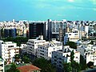

Cyprus
Republic of Cyprus | |
|---|---|
| Anthem: Ὕμνος εἰς τὴν Ἐλευθερίαν[a] (English: "Hymn to Liberty") | |
Location of the Republic of Cyprus in dark green, territory de jure but not controlled in light green | |
| Capital and largest city | Nicosia 35°10′N 33°22′E / 35.167°N 33.367°E |
| Official languages | |
| Minority languages | |
| Vernaculars | |
| Ethnic groups | |
| Religion (2020; including Northern Cyprus) |
|
| Demonym(s) | Cypriot |
| Government | Unitary presidential republic |
| Nikos Christodoulides | |
| Vacant[b] | |
| Annita Demetriou | |
| Legislature | House of Representatives |
| Independence from the United Kingdom | |
| 19 February 1959 | |
• Independence proclaimed | 16 August 1960 |
| 1 October 1960 | |
| Area | |
• Total[c] | 9,251 km2 (3,572 sq mi) (162nd) |
• Water (%) | 0.11[3] |
| Population | |
• 2021 census | |
• Density | 123.4[c][5]/km2 (319.6/sq mi) (82nd) |
| GDP (PPP) | 2024 estimate |
• Total | |
• Per capita | |
| GDP (nominal) | 2024 estimate |
• Total | |
• Per capita | |
| Gini (2022) | low inequality |
| HDI (2022) | very high (29th) |
| Currency | Euro (€) (EUR) |
| Time zone | UTC+02:00 (EET) |
• Summer (DST) | UTC+03:00 (EEST) |
| Drives on | left |
| Calling code | +357 |
| ISO 3166 code | CY |
| Internet TLD | .cy[e] |
Cyprus[f] (/ˈsaɪprəs/ ), officially the Republic of Cyprus,[g] is an island country in the eastern Mediterranean Sea. It is geographically a part of West Asia, but its cultural ties and geopolitics are overwhelmingly Southeast European. Cyprus is the third largest and third-most populous island in the Mediterranean.[11][12] It is east of Greece, north of Egypt, south of Turkey, and west of Lebanon and Syria. Its capital and largest city is Nicosia. The northeast portion of the island is de facto governed by the self-declared Turkish Republic of Northern Cyprus.
Cyprus was settled by Mycenaean Greeks in two waves in the 2nd millennium BC. As a strategic location in the Eastern Mediterranean, it was subsequently occupied by several major powers, including the empires of the Assyrians, Egyptians and Persians, from whom the island was seized in 333 BC by Alexander the Great. Subsequent rule by Ptolemaic Egypt, the Classical and Eastern Roman Empire, Arab caliphates for a short period, the French Lusignan dynasty and the Venetians was followed by over three centuries of Ottoman rule between 1571 and 1878 (de jure until 1914).[13] Cyprus was placed under the United Kingdom's administration based on the Cyprus Convention in 1878 and was formally annexed by the UK in 1914.
The future of the island became a matter of disagreement between the two prominent ethnic communities, Greek Cypriots and Turkish Cypriots. From the 19th century onwards, the Greek Cypriot population pursued enosis, union with Greece, which became a Greek national policy in the 1950s.[14][15] The Turkish Cypriot population initially advocated the continuation of the British rule, then demanded the annexation of the island to Turkey, and in the 1950s, together with Turkey, established a policy of taksim, the partition of Cyprus and the creation of a Turkish polity in the north.[16] Following nationalist violence in the 1950s, Cyprus was granted independence in 1960.[17] The crisis of 1963–64 brought further intercommunal violence between the two communities, displaced more than 25,000 Turkish Cypriots into enclaves[18]: 56–59 [19] and brought the end of Turkish Cypriot representation in the republic. On 15 July 1974, a coup d'état was staged by Greek Cypriot nationalists[20][21] and elements of the Greek military junta.[22] This action precipitated the Turkish invasion of Cyprus on 20 July,[23] which led to the capture of the present-day territory of Northern Cyprus and the displacement of over 150,000 Greek Cypriots[24][25] and 50,000 Turkish Cypriots.[26] A separate Turkish Cypriot state in the north was established by unilateral declaration in 1983; the move was widely condemned by the international community, with Turkey alone recognising the new state. These events and the resulting political situation are matters of a continuing dispute. Cyprus is a major tourist destination in the Mediterranean.[27][28][29] The country has an advanced high-income economy. The Republic of Cyprus has been a member of the Commonwealth since 1961 and was a founding member of the Non-Aligned Movement until it joined the European Union on 1 May 2004.[30] On 1 January 2008, Cyprus joined the eurozone.[31]
Etymology
The earliest attested reference to Cyprus is the 15th century BC Mycenaean Greek 𐀓𐀠𐀪𐀍, ku-pi-ri-jo,[32] meaning "Cypriot" (Greek: Κύπριος), written in Linear B syllabic script.[33] The classical Greek form of the name is Κύπρος (Kýpros).
The etymology of the name is unknown. Suggestions include:
- the Greek word for the Mediterranean cypress tree (Cupressus sempervirens), κυπάρισσος (kypárissos)
- the Greek name of the henna tree (Lawsonia alba), κύπρος (kýpros)
- an Eteocypriot word for copper. It has been suggested, for example, that it has roots in the Sumerian word for copper (zubar) or for bronze (kubar), from the large deposits of copper ore found on the island.[34]
Through overseas trade, the island has given its name to the Classical Latin word for copper through the phrase aes Cyprium, "metal of Cyprus", later shortened to Cuprum.[34][35]
The standard demonym relating to Cyprus or its people or culture is Cypriot. The terms Cypriote and Cyprian (later a personal name) are also used, though less frequently.
The state's official name in Greek literally translates to "Cypriot Republic" in English, but this translation is not used officially; "Republic of Cyprus" is used instead.
History
Prehistoric and ancient period
Hunter-gatherers first arrived on Cyprus around 13–12,000 years ago (11,000 to 10,000 BC), based on dating of sites like Aetokremnos on the south coast and the inland site of Vretsia Roudias.[36] The arrival of the first humans coincides with the extinction of the 75 cm (2.46 ft) high Cypriot pygmy hippopotamus and 1 metre (3 ft 3 in) tall Cyprus dwarf elephant, the only large mammals native to the island.[37] Neolithic farming communities emerged on the island by around 10,500 years ago (8500 BC).[38]
Remains of an eight-month-old cat were discovered buried with a human body at a separate Neolithic site in Cyprus.[39] The grave is estimated to be 9,500 years old (7500 BC), predating ancient Egyptian civilisation and pushing back the earliest known feline-human association significantly.[40] The remarkably well-preserved Neolithic village of Khirokitia is a UNESCO World Heritage Site, dating to approximately 6800 BC.[41]
During the Late Bronze Age, from around 1650 BC Cyprus (identified in whole or part as Alashiya in contemporary texts) became more connected to the wider Mediterranean world driven by the trade in copper extracted from the Troodos Mountains, which stimulated the development of urbanized settlements across the island, with records suggesting that Cyprus at this time was ruled by "kings" who corresponded with the leaders of other Mediterranean states (like the pharaohs of the New Kingdom of Egypt, as documented in the Amarna letters).[42] The first recorded name of a Cypriot king is Kushmeshusha, as appears on letters sent to Ugarit in the 13th century BC.[43]
At the end of the Bronze Age, the island experienced two waves of Greek settlement.[44] The first wave consisted of Mycenaean Greek traders, who started visiting Cyprus around 1400 BC.[45][46][47] A major wave of Greek settlement is believed to have taken place following the Late Bronze Age collapse of Mycenaean Greece from 1100 to 1050 BC, with the island's predominantly Greek character dating from this period.[47][48] Cyprus occupies an important role in Greek mythology, being the birthplace of Aphrodite and Adonis, and home to King Cinyras, Teucer and Pygmalion.[49] Literary evidence suggests an early Phoenician presence at Kition, which was under Tyrian rule at the beginning of the 10th century BC.[50] Some Phoenician merchants who were believed to come from Tyre colonised the area and expanded the political influence of Kition. After c. 850 BC, the sanctuaries [at the Kathari site] were rebuilt and reused by the Phoenicians.
Cyprus is at a strategic location in the Eastern Mediterranean.[51][52][53] It was ruled by the Neo-Assyrian Empire for a century starting in 708 BC, before a brief spell under Egyptian rule and eventually Achaemenid rule in 545 BC.[47] The Cypriots, led by Onesilus, king of Salamis, joined their fellow Greeks in the Ionian cities during the unsuccessful Ionian Revolt in 499 BC against the Achaemenids. The revolt was suppressed, but Cyprus managed to maintain a high degree of autonomy and remained inclined towards the Greek world.[47] During the whole period of the Persian rule, there is a continuity in the reign of the Cypriot kings and during their rebellions they were crushed by Persian rulers from Asia Minor, which is an indication that the Cypriots were ruling the island with directly regulated relations with the Great King and there was not a Persian satrap.[54] The Kingdoms of Cyprus enjoyed special privileges and a semi-autonomous status, but they were still considered vassal subjects of the Great King.[54]
The island was conquered by Alexander the Great in 333 BC and Cypriot navy helped Alexander during the siege of Tyre (332 BC). The Cypriot fleet was also sent to help Amphoterus.[55] In addition, Alexander had two Cypriot generals Stasander and Stasanor both from the Soli and later both became satraps in Alexander's empire. Following Alexander's death, the division of his empire, and the subsequent Wars of the Diadochi, Cyprus became part of the Hellenistic empire of Ptolemaic Egypt. It was during this period that the island was fully Hellenized. In 58 BC Cyprus was acquired by the Roman Republic and became Roman Cyprus in 22 BC.[47]
Middle Ages
When the Roman Empire was divided into Eastern and Western parts in 286, Cyprus became part of the East Roman Empire (also called the Byzantine Empire), and would remain so for some 900 years. Under Byzantine rule, the Greek orientation that had been prominent since antiquity developed the strong Hellenistic-Christian character that continues to be a hallmark of the Greek Cypriot community.[56]
Beginning in 649, Cyprus endured repeated attacks and raids launched by Umayyad Caliphate. Many were quick piratical raids, but others were large-scale attacks in which many Cypriots were slaughtered and great wealth carried off or destroyed.[56] The city of Salamis was destroyed and never rebuilt.[47] In 688, Emperor Justinian II and Caliph Abd al-Malik signed a treaty whereby Cyprus would be paying an equal amount of tribute to the Caliphate and tax to the Empire, and would remain neutral in status to both. Byzantine control remained stronger in the northern coast, the Arabs exerted more influence in the south. There are no Byzantine churches which survive from this period, and the island entered a period of impoverishment.[57] Full Byzantine rule was restored in 965, when Emperor Nikephoros II Phokas scored decisive victories on land and sea.[47]
In 1156 Raynald of Châtillon and Thoros II of Armenia brutally sacked Cyprus over a period of three weeks, stealing so much plunder and capturing so many of the leading citizens and their families for ransom, that the island took generations to recover. Several Greek priests were mutilated and sent away to Constantinople.[58]
In 1185 Isaac Komnenos, a member of the Byzantine imperial family, took over Cyprus and declared it independent of the Empire. In 1191, during the Third Crusade, Richard I of England captured the island from Isaac.[59] He used it as a major supply base that was relatively safe from the Saracens. A year later Richard sold the island to the Knights Templar, who, following a bloody revolt, in turn sold it to Guy of Lusignan. His brother and successor Aimery was recognised as King of Cyprus by Henry VI, Holy Roman Emperor.[47]
Following the death in 1473 of James II, the last Lusignan king, the Republic of Venice assumed control of the island, while the late king's Venetian widow, Queen Catherine Cornaro, reigned as figurehead. Venice formally annexed the Kingdom of Cyprus in 1489, following the abdication of Catherine.[47] The Venetians fortified Nicosia by building the Walls of Nicosia, and used it as an important commercial hub. Throughout Venetian rule, the Ottoman Empire frequently raided Cyprus. In 1539 the Ottomans destroyed Limassol and so fearing the worst, the Venetians also fortified Famagusta and Kyrenia.[47]
Although the Lusignan French aristocracy remained the dominant social class in Cyprus throughout the medieval period, the former assumption that Greeks were treated only as serfs on the island[47] is no longer considered by academics to be accurate. It is now accepted that the medieval period saw increasing numbers of Greek Cypriots elevated to the upper classes, a growing Greek middle ranks,[60] and the Lusignan royal household even marrying Greeks. This included King John II of Cyprus who married Helena Palaiologina.[61]
Ottoman Cyprus
In 1570, a full-scale Ottoman assault with 60,000 troops brought the island under Ottoman control, despite stiff resistance by the inhabitants of Nicosia and Famagusta. Ottoman forces capturing Cyprus massacred many Greek and Armenian Christian inhabitants.[62] The previous Latin elite were destroyed and the first significant demographic change since antiquity took place with the formation of a Muslim community.[63] Soldiers who fought in the conquest settled on the island and Turkish peasants and craftsmen were brought to the island from Anatolia.[64] This new community also included banished Anatolian tribes, "undesirable" persons and members of various "troublesome" Muslim sects, as well as a number of new converts on the island.[65]
The Ottomans abolished the feudal system previously in place and applied the millet system to Cyprus, under which non-Muslim peoples were governed by their own religious authorities. In a reversal from the days of Latin rule, the head of the Church of Cyprus was invested as leader of the Greek Cypriot population and acted as mediator between Christian Greek Cypriots and the Ottoman authorities. This status ensured that the Church of Cyprus was in a position to end the constant encroachments of the Roman Catholic Church.[66] Ottoman rule of Cyprus was at times indifferent, at times oppressive, depending on the temperaments of the sultans and local officials.[67]
The ratio of Muslims to Christians fluctuated throughout the period of Ottoman domination. In 1777–78, 47,000 Muslims constituted a majority over the island's 37,000 Christians.[68] By 1872, the population of the island had risen to 144,000, comprising 44,000 Muslims and 100,000 Christians.[69] The Muslim population included numerous crypto-Christians,[70] including the Linobambaki, a crypto-Catholic community that arose due to religious persecution of the Catholic community by the Ottoman authorities;[70][71] this community would assimilate into the Turkish Cypriot community during British rule.[72]
As soon as the Greek War of Independence broke out in 1821, several Greek Cypriots left for Greece to join the Greek forces. In response, the Ottoman governor of Cyprus arrested and executed 486 prominent Greek Cypriots, including the Archbishop of Cyprus, Kyprianos, and four other bishops.[73] In 1828, modern Greece's first president Ioannis Kapodistrias called for union of Cyprus with Greece, and numerous minor uprisings took place.[74] Reaction to Ottoman misrule led to uprisings by both Greek and Turkish Cypriots, although none were successful. After centuries of neglect by the Ottoman Empire, the poverty of most of the people and the ever-present tax collectors fueled Greek nationalism, and by the 20th century the idea of union with newly independent Greece was firmly rooted among Greek Cypriots.[67]
Under Ottoman rule, numeracy, school enrolment and literacy rates were all low. They persisted some time after Ottoman rule ended, and then increased rapidly during the twentieth century.[75]
British Cyprus
In the aftermath of the Russo-Turkish War (1877–1878) and the Congress of Berlin, Cyprus was leased to the British Empire which de facto took over its administration in 1878 (though, in terms of sovereignty, Cyprus remained a de jure Ottoman territory until 5 November 1914, together with Egypt and Sudan)[13] in exchange for guarantees that Britain would use the island as a base to protect the Ottoman Empire against possible Russian aggression.[47]
The island would serve Britain as a key military base for its colonial routes. By 1906, when the Famagusta harbour was completed, Cyprus was a strategic naval outpost overlooking the Suez Canal, the crucial main route to India which was then Britain's most important overseas possession. Following the outbreak of the First World War and the decision of the Ottoman Empire to join the war on the side of the Central Powers, on 5 November 1914 the British Empire formally annexed Cyprus and declared the Ottoman Khedivate of Egypt and Sudan a Sultanate and British protectorate.[13][47]
In October 1915, Britain offered Cyprus to Greece, ruled by King Constantine I of Greece, on the condition that Greece join the war on the side of the British and went to Serbia’s assistance, in order to fulfill her Treaty obligations under the Serbo-Greek pact of May 1913.[76] It gave Greece a golden “opportunity” in achieving enosis with Cyprus.[76] Alternatively was it a “lost opportunity” when Zaimis administration declined the British proposal.[76]
In 1923, under the Treaty of Lausanne, the nascent Turkish republic relinquished any claim to Cyprus,[77] and in 1925 it was declared a British crown colony.[47] During the Second World War, many Greek and Turkish Cypriots enlisted in the Cyprus Regiment.
The Greek Cypriot population, meanwhile, had become hopeful that the British administration would lead to enosis. The idea of enosis was historically part of the Megali Idea, a greater political ambition of a Greek state encompassing the territories with large Greek populations in the former Ottoman Empire, including Cyprus and Asia Minor with a capital in Constantinople, and was actively pursued by the Cypriot Orthodox Church, which had its members educated in Greece. These religious officials, together with Greek military officers and professionals, some of whom still pursued the Megali Idea, would later found the guerrilla organisation EOKA (Ethniki Organosis Kyprion Agoniston or National Organisation of Cypriot Fighters).[78][79] The Greek Cypriots viewed the island as historically Greek and believed that union with Greece was a natural right.[80] In the 1950s, the pursuit of enosis became a part of the Greek national policy.[81]
Initially, the Turkish Cypriots favoured the continuation of the British rule.[82] However, they were alarmed by the Greek Cypriot calls for enosis, as they saw the union of Crete with Greece, which led to the exodus of Cretan Turks, as a precedent to be avoided,[83][84] and they took a pro-partition stance in response to the militant activity of EOKA.[85] The Turkish Cypriots also viewed themselves as a distinct ethnic group of the island and believed in their having a separate right to self-determination from Greek Cypriots.[80] Meanwhile, in the 1950s, Turkish leader Menderes considered Cyprus an "extension of Anatolia", rejected the partition of Cyprus along ethnic lines and favoured the annexation of the whole island to Turkey. Nationalistic slogans centred on the idea that "Cyprus is Turkish" and the ruling party declared Cyprus to be a part of the Turkish homeland that was vital to its security. Upon realising that the fact that the Turkish Cypriot population was only 20% of the islanders made annexation unfeasible, the national policy was changed to favour partition. The slogan "Partition or Death" was frequently used in Turkish Cypriot and Turkish protests starting in the late 1950s and continuing throughout the 1960s. Although after the Zürich and London conferences Turkey seemed to accept the existence of the Cypriot state and to distance itself from its policy of favouring the partition of the island, the goal of the Turkish and Turkish Cypriot leaders remained that of creating an independent Turkish state in the northern part of the island.[86][87]
In January 1950, the Church of Cyprus organised a referendum under the supervision of clerics and with no Turkish Cypriot participation,[88] where 96% of the participating Greek Cypriots voted in favour of enosis,[89][90][18]: 9 The Greeks were 80.2% of the total island' s population at the time (census 1946). Restricted autonomy under a constitution was proposed by the British administration but eventually rejected. In 1955 the EOKA organisation was founded, seeking union with Greece through armed struggle. At the same time the Turkish Resistance Organisation (TMT), calling for Taksim, or partition, was established by the Turkish Cypriots as a counterweight.[91] British officials also tolerated the creation of the Turkish underground organisation T.M.T. The Secretary of State for the Colonies in a letter dated 15 July 1958 had advised the Governor of Cyprus not to act against T.M.T despite its illegal actions so as not to harm British relations with the Turkish government.[87]
Independence and inter-communal violence
During British rule, the future of the island became a matter of disagreement between the two prominent ethnic communities, Greek Cypriots, who made up 77% of the population in 1960, and Turkish Cypriots, who made up 18% of the population. From the 19th century onwards, the Greek Cypriot population pursued enosis, union with Greece, which became a Greek national policy in the 1950s.[92][93] The Turkish Cypriot population initially advocated the continuation of the British rule, then demanded the annexation of the island to Turkey, and in the 1950s, together with Turkey, established a policy of taksim, the partition of Cyprus and the creation of a Turkish polity in the north.[94]
Cyprus was granted independence in 1960, following an armed campaign spearheaded by EOKA.[17] As per the Zürich and London Agreement, Cyprus officially attained independence on 16 August 1960, and at the time had a total population of 573,566; of whom 442,138 (77.1%) were Greeks, 104,320 (18.2%) Turks, and 27,108 (4.7%) others.[95] The UK retained the two Sovereign Base Areas of Akrotiri and Dhekelia, while government posts and public offices were allocated by ethnic quotas, giving the minority Turkish Cypriots a permanent veto, 30% in parliament and administration, and granting the three mother-states guarantor rights.
However, the division of power as foreseen by the constitution soon resulted in legal impasses and discontent on both sides, and nationalist militants started training again, with the military support of Greece and Turkey respectively. The Greek Cypriot leadership believed that the rights given to Turkish Cypriots under the 1960 constitution were too extensive and designed the Akritas plan, which was aimed at reforming the constitution in favour of Greek Cypriots, persuading the international community about the correctness of the changes and violently subjugating Turkish Cypriots in a few days should they not accept the plan.[96] Tensions were heightened when Cypriot President Archbishop Makarios III called for constitutional changes, which were rejected by Turkey[18]: 17–20 and opposed by Turkish Cypriots.[96]
Intercommunal violence erupted on 21 December 1963, when two Turkish Cypriots were killed at an incident involving the Greek Cypriot police. The violence resulted in the death of 364 Turkish and 174 Greek Cypriots,[97] destruction of 109 Turkish Cypriot or mixed villages and displacement of 25,000–30,000 Turkish Cypriots. The crisis resulted in the end of the Turkish Cypriot involvement in the administration and their claiming that it had lost its legitimacy;[18]: 56–59 the nature of this event is still controversial. In some areas, Greek Cypriots prevented Turkish Cypriots from travelling and entering government buildings, while some Turkish Cypriots willingly withdrew due to the calls of the Turkish Cypriot administration.[98] Turkish Cypriots started living in enclaves. The republic's structure was changed, unilaterally, by Makarios, and Nicosia was divided by the Green Line, with the deployment of UNFICYP troops.[18]: 56–59
In 1964, Turkey threatened to invade Cyprus[99] in response to the continuing Cypriot intercommunal violence, but this was stopped by a strongly worded telegram from the US President Lyndon B. Johnson on 5 June, warning that the US would not stand beside Turkey in case of a consequential Soviet invasion of Turkish territory.[100] Meanwhile, by 1964, enosis was a Greek policy and would not be abandoned; Makarios and the Greek prime minister Georgios Papandreou agreed that enosis should be the ultimate aim and King Constantine wished Cyprus "a speedy union with the mother country". Greece dispatched 10,000 troops to Cyprus to counter a possible Turkish invasion.[101]
The crisis of 1963–64 had brought further intercommunal violence between the two communities, displaced more than 25,000 Turkish Cypriots into enclaves[18]: 56–59 [19] and brought the end of Turkish Cypriot representation in the republic.
1974 coup d'état, invasion, and division
On 15 July 1974, the Greek military junta under Dimitrios Ioannides carried out a coup d'état in Cyprus, to unite the island with Greece.[102][103][104] The coup ousted president Makarios III and replaced him with pro-enosis nationalist Nikos Sampson.[105] In response to the coup,[h] five days later, on 20 July 1974, the Turkish army invaded the island, citing a right to intervene to restore the constitutional order from the 1960 Treaty of Guarantee. This justification has been rejected by the United Nations and the international community.[111]
The Turkish air force began bombing Greek positions in Cyprus, and hundreds of paratroopers were dropped in the area between Nicosia and Kyrenia, where well-armed Turkish Cypriot enclaves had been long-established; while off the Kyrenia coast, Turkish troop ships landed 6,000 men as well as tanks, trucks and armoured vehicles.[112][113]
Three days later, when a ceasefire had been agreed,[114] Turkey had landed 30,000 troops on the island and captured Kyrenia, the corridor linking Kyrenia to Nicosia, and the Turkish Cypriot quarter of Nicosia itself.[114] The junta in Athens, and then the Sampson regime in Cyprus fell from power. In Nicosia, Glafkos Clerides temporarily assumed the presidency.[114] But after the peace negotiations in Geneva, the Turkish government reinforced their Kyrenia bridgehead and started a second invasion on 14 August.[115] The invasion resulted in Morphou, Karpass, Famagusta and the Mesaoria coming under Turkish control.
International pressure led to a ceasefire, and by then 36% of the island had been taken over by the Turks and 180,000 Greek Cypriots had been evicted from their homes in the north.[116] At the same time, around 50,000 Turkish Cypriots were displaced to the north and settled in the properties of the displaced Greek Cypriots. Among a variety of sanctions against Turkey, in mid-1975 the US Congress imposed an arms embargo on Turkey for using US-supplied equipment during the Turkish invasion of Cyprus in 1974.[117] There were 1,534 Greek Cypriots[118] and 502 Turkish Cypriots[119] missing as a result of the fighting from 1963 to 1974.
The Republic of Cyprus has de jure sovereignty over the entire island, including its territorial waters and exclusive economic zone, with the exception of the Sovereign Base Areas of Akrotiri and Dhekelia, which remain under the UK's control according to the London and Zürich Agreements. However, the Republic of Cyprus is de facto partitioned into two main parts: the area under the effective control of the Republic, in the south and west and comprising about 59% of the island's area, and the north,[120] administered by the self-declared Turkish Republic of Northern Cyprus, covering about 36% of the island's area. Another nearly 4% of the island's area is covered by the UN buffer zone. The international community considers the northern part of the island to be territory of the Republic of Cyprus occupied by Turkish forces.[i] The occupation is viewed as illegal under international law and amounting to illegal occupation of EU territory since Cyprus became a member of the European Union.[126]
Post-division
After the restoration of constitutional order and the return of Archbishop Makarios III to Cyprus in December 1974, Turkish troops remained, occupying the northeastern portion of the island. In 1983, the Turkish Cypriot parliament, led by the Turkish Cypriot leader Rauf Denktaş, proclaimed the Turkish Republic of Northern Cyprus (TRNC), which is recognised only by Turkey.[3]
The events of the summer of 1974 dominate the politics on the island, as well as Greco-Turkish relations. Turkish settlers have been settled in the north with the encouragement of the Turkish and Turkish Cypriot states. The Republic of Cyprus considers their presence a violation of the Geneva Convention,[18]: 56–59 whilst many Turkish settlers have since severed their ties to Turkey and their second generation considers Cyprus to be their homeland.[127]
The Turkish invasion, the ensuing occupation and the declaration of independence by the TRNC have been condemned by United Nations resolutions, which are reaffirmed by the Security Council every year.[128]
21st century
Attempts to resolve the Cyprus dispute have continued. In 2004, the Annan Plan, drafted by then UN Secretary General Kofi Annan, was put to a referendum in both Cypriot administrations. 65% of Turkish Cypriots voted in support of the plan and 74% Greek Cypriots voted against the plan, claiming that it disproportionately favoured Turkish Cypriots and gave unreasonable influence over the nation to Turkey.[129] In total, 66.7% of the voters rejected the Annan Plan.
On 1 May 2004 Cyprus joined the European Union, together with nine other countries.[130] Cyprus was accepted into the EU as a whole, although the EU legislation is suspended in Northern Cyprus until a final settlement of the Cyprus problem.
Efforts have been made to enhance freedom of movement between the two sides. In April 2003, Northern Cyprus unilaterally eased checkpoint restrictions, permitting Cypriots to cross between the two sides for the first time in 30 years.[131] In March 2008, a wall that had stood for decades at the boundary between the Republic of Cyprus and the UN buffer zone was demolished.[132] The wall had cut across Ledra Street in the heart of Nicosia and was seen as a strong symbol of the island's 32-year division. On 3 April 2008, Ledra Street was reopened in the presence of Greek and Turkish Cypriot officials.[133] The two sides relaunched reunification talks in 2015,[134] but these collapsed in 2017.[135]
The European Union warned in February 2019 that Cyprus was selling EU passports to Russian oligarchs, and thus would allow organized crime syndicates to infiltrate the EU.[136] In 2020, leaked documents revealed a wider range of former and current officials from Afghanistan, China, Dubai, Lebanon, the Russian Federation, Saudi Arabia, Ukraine and Vietnam who bought a Cypriot citizenship prior to a change of the law in July 2019.[137][138] Since 2020 Cyprus and Turkey have been engaged in a dispute over the extent of their exclusive economic zones, ostensibly sparked by oil and gas exploration in the area.[139]
In November 2023, the Cyprus Confidential data leak published by the International Consortium of Investigative Journalists showed the country's financial network entertaining strong links with Russian oligarchs and high-up figures in the Kremlin, supporting the regime of Vladimir Putin.[140]
In July 2024, on the 50th anniversary of the Turkish invasion of Northern Cyprus, Turkish President Erdoğan rejected a United Nations-endorsed plan for a federal government and supported the idea of having two separate states within Cyprus. Greek Cypriots immediately rejected Erdoğan's two-state proposal, calling it a "non-starter".[141]
Geography

Cyprus is the third largest island in the Mediterranean Sea, after the Italian islands of Sicily and Sardinia, both in terms of area and population.[3] It is also the world's 80th largest by area and world's 51st largest by population. It measures 240 kilometres (149 mi) long from end to end and 100 kilometres (62 mi) wide at its widest point, with Turkey 75 kilometres (47 mi) to the north. It lies between latitudes 34° and 36° N, and longitudes 32° and 35° E.
Other neighbouring territories include Syria and Lebanon to the east and southeast (105 and 108 kilometres (65 and 67 mi), respectively), Israel 200 kilometres (124 mi) to the southeast, The Gaza Strip 427 kilometres (265 mi) to the southeast, Egypt 380 kilometres (236 mi) to the south, and Greece to the northwest: 280 kilometres (174 mi) to the small Dodecanesian island of Kastellorizo (Megisti), 400 kilometres (249 mi) to Rhodes and 800 kilometres (497 mi) to the Greek mainland. Cyprus is at the crossroads of three continents, with sources placing Cyprus in Europe,[142][143][144] and alternatively Western Asia and the Middle East.[145][3]
The physical relief of the island is dominated by two mountain ranges, the Troodos Mountains and the smaller Kyrenia Range, and the central plain they encompass, the Mesaoria. The Mesaoria plain is drained by the Pedieos River, the longest on the island. The Troodos Mountains cover most of the southern and western portions of the island and account for roughly half its area. The highest point on Cyprus is Mount Olympus at 1,952 m (6,404 ft), in the centre of the Troodos range. The narrow Kyrenia Range, extending along the northern coastline, occupies substantially less area, and elevations are lower, reaching a maximum of 1,024 m (3,360 ft). The island lies within the Anatolian Plate.[146]
Cyprus contains the Cyprus Mediterranean forests ecoregion.[147] It had a 2018 Forest Landscape Integrity Index mean score of 7.06/10, ranking it 59th globally out of 172 countries.[148]
Geopolitically, the island is subdivided into four main segments. The Republic of Cyprus occupies the southern two-thirds of the island (59.74%). The Turkish Republic of Northern Cyprus occupies the northern third (34.85%), and the United Nations-controlled Green Line provides a buffer zone that separates the two and covers 2.67% of the island. Lastly, there are two bases under British sovereignty on the island: Akrotiri and Dhekelia, covering the remaining 2.74%.
Climate
Cyprus has a subtropical climate – Mediterranean and semi-arid type (in the north-eastern part of the island) – Köppen climate classifications Csa and BSh,[149][150] with very mild winters (on the coast) and warm to hot summers. Snow is possible only in the Troodos Mountains in the central part of island. Rain occurs mainly in winter, with summer being generally dry.
Cyprus has one of the warmest climates in the Mediterranean part of the European Union.[151] The average annual temperature on the coast is around 24 °C (75 °F) during the day and 14 °C (57 °F) at night. Generally, summers last about eight months, beginning in April with average temperatures of 21–23 °C (70–73 °F) during the day and 11–13 °C (52–55 °F) at night, and ending in November with average temperatures of 22–23 °C (72–73 °F) during the day and 12–14 °C (54–57 °F) at night, although in the remaining four months temperatures sometimes exceed 20 °C (68 °F).[152]
Sunshine hours on the coast are around 3,200 per year, from an average of 5–6 hours of sunshine per day in December to an average of 12–13 hours in July.[153] This is about double that of cities in the northern half of Europe; for comparison, London receives about 1,540 per year.[154] In December, London receives about 50 hours of sunshine[154] while coastal locations in Cyprus about 180 hours (almost as much as in May in London).
Water supply
Cyprus suffers from a chronic shortage of water. The country relies heavily on rain to provide household water, but in the past 30 years average yearly precipitation has decreased.[155] Between 2001 and 2004, exceptionally heavy annual rainfall pushed water reserves up, with supply exceeding demand, allowing total storage in the island's reservoirs to rise to an all-time high by the start of 2005. However, since then demand has increased annually – a result of local population growth, foreigners moving to Cyprus and the number of visiting tourists – while supply has fallen as a result of more frequent droughts[155] (2006 European heat wave, 2018 European heat wave, 2019 European heat waves, 2022 European heat waves).
Dams remain the principal source of water both for domestic and agricultural use; Cyprus has a total of 108 dams and reservoirs, with a total water storage capacity of about 330,000,000 m3 (1.2×1010 cu ft).[156] Water desalination plants are gradually being constructed to deal with recent years of prolonged drought.
The Government has invested heavily in the creation of water desalination plants which have supplied almost 50 per cent of domestic water since 2001. Efforts have also been made to raise public awareness of the situation and to encourage domestic water users to take more responsibility for the conservation of this increasingly scarce commodity.[157]
Turkey has built a water pipeline under the Mediterranean Sea from Anamur on its southern coast to the northern coast of Cyprus, to supply Northern Cyprus with potable and irrigation water (see Northern Cyprus Water Supply Project).
Flora and fauna
Cyprus is home to a number of endemic species, including the Cypriot mouse, the golden oak and the Cyprus cedar.
Government and politics
Cyprus is a presidential republic. The head of state and of the government is elected by a process of universal suffrage for a five-year term. Executive power is exercised by the government with legislative power vested in the House of Representatives whilst the Judiciary is independent of both the executive and the legislature.
The 1960 Constitution provided for a presidential system of government with independent executive, legislative and judicial branches as well as a complex system of checks and balances including a weighted power-sharing ratio designed to protect the interests of the Turkish Cypriots. The executive was led by a Greek Cypriot president and a Turkish Cypriot vice-president elected by their respective communities for five-year terms and each possessing a right of veto over certain types of legislation and executive decisions. Legislative power rested on the House of Representatives who were also elected on the basis of separate voters' rolls.
Since 1965, following clashes between the two communities, the Turkish Cypriot seats in the House have remained vacant. In 1974 Cyprus was divided de facto when the Turkish army occupied the northern third of the island. The Turkish Cypriots subsequently declared independence in 1983 as the Turkish Republic of Northern Cyprus but were recognised only by Turkey. In 1985 the TRNC adopted a constitution and held its first elections. The United Nations recognises the sovereignty of the Republic of Cyprus over the entire island of Cyprus.
As of 2007, the House of Representatives had 56 members elected for a five-year term by proportional representation, and three observer members representing the Armenian, Latin and Maronite minorities. Twenty-four seats were allocated to the Turkish community but have remained vacant since 1964. The political environment was dominated by the communist AKEL, the liberal conservative Democratic Rally, the centrist[158] Democratic Party, and the social-democratic EDEK.
In 2008, Dimitris Christofias became the country's first Communist head of state. Due to his involvement in the 2012–13 Cypriot financial crisis, Christofias did not run for re-election in 2013. The Presidential election in 2013 resulted in Democratic Rally candidate Nicos Anastasiades winning 57.48% of the vote. As a result, Anastasiades was sworn in on 28 February 2013. Anastasiades was re-elected with 56% of the vote in the 2018 presidential election.[159][160] On 28 February 2023, Nikos Christodoulides, the winner of the 2023 presidential election run-off, was sworn in as the eighth president of the Republic of Cyprus.[161]
Administrative divisions
The Republic of Cyprus is divided into six districts: Nicosia, Famagusta, Kyrenia, Larnaca, Limassol and Paphos.[162]
Exclaves and enclaves
Cyprus has four exclaves, all in territory that belongs to the British Sovereign Base Area of Dhekelia. The first two are the villages of Ormidhia and Xylotymvou. The third is the Dhekelia Power Station, which is divided by a British road into two parts. The northern part is the EAC refugee settlement. The southern part, even though located by the sea, is also an exclave because it has no territorial waters of its own, those being UK waters.[163]
The UN buffer zone runs up against Dhekelia and picks up again from its east side off Ayios Nikolaos and is connected to the rest of Dhekelia by a thin land corridor. In that sense the buffer zone turns the Paralimni area on the southeast corner of the island into a de facto, though not de jure, exclave.
Foreign relations
The Republic of Cyprus is a member of the following international groups: Australia Group, CN, CE, CFSP, EBRD, EIB, EU, FAO, IAEA, IBRD, ICAO, ICC, ICCt, ITUC, IDA, IFAD, IFC, IHO, ILO, IMF, IMO, Interpol, IOC, IOM, IPU, ITU, MIGA, NAM, NSG, OPCW, OSCE, PCA, UN, UNCTAD, UNESCO, UNHCR, UNIDO, UPU, WCL, WCO, WFTU, WHO, WIPO, WMO, WToO, WTO.[3][164]
Cyprus is the 88th most peaceful country in the world, according to the 2024 Global Peace Index.[165]
Military
The Cypriot National Guard is the main military institution of the Republic of Cyprus. It is a combined arms force, with land, air and naval elements. Historically all male citizens were required to spend 24 months serving in the National Guard after their 17th birthday, but in 2016 this period of compulsory service was reduced to 14 months.[166]
Annually, approximately 10,000 persons are trained in recruit centres. Depending on their awarded speciality the conscript recruits are then transferred to speciality training camps or to operational units.
While until 2016 the armed forces were mainly conscript based, since then a large professional enlisted institution has been adopted (ΣΥΟΠ), which combined with the reduction of conscript service produces an approximate 3:1 ratio between conscript and professional enlisted.
Law, justice and human rights
The Cyprus Police (Greek: Αστυνομία Κύπρου, Turkish: Kıbrıs Polisi) is the only National Police Service of the Republic of Cyprus and is under the Ministry of Justice and Public Order since 1993.[167]
In "Freedom in the World 2011", Freedom House rated Cyprus as "free".[168] In January 2011, the Report of the Office of the United Nations High Commissioner for Human Rights on the question of Human Rights in Cyprus noted that the ongoing division of Cyprus continues to affect human rights throughout the island "including freedom of movement, human rights pertaining to the question of missing persons, discrimination, the right to life, freedom of religion, and economic, social and cultural rights".[169] The constant focus on the division of the island can sometimes mask other human rights issues.[citation needed]
In 2014, Turkey was ordered by the European Court of Human Rights to pay well over $100m in compensation to Cyprus for the invasion;[170] Ankara announced that it would ignore the judgment.[171] In 2014, a group of Cypriot refugees and a European parliamentarian, later joined by the Cypriot government, filed a complaint to the International Court of Justice, accusing Turkey of violating the Geneva Conventions by directly or indirectly transferring its civilian population into occupied territory.[citation needed] Other violations of the Geneva and the Hague Conventions—both ratified by Turkey—amount to what archaeologist Sophocles Hadjisavvas called "the organized destruction of Greek and Christian heritage in the north".[172] These violations include looting of cultural treasures, deliberate destruction of churches, neglect of works of art, and altering the names of important historical sites, which was condemned by the International Council on Monuments and Sites. Hadjisavvas has asserted that these actions are motivated by a Turkish policy of erasing the Greek presence in Northern Cyprus within a framework of ethnic cleansing. But some perpetrators are just motivated by greed and are seeking profit.[172] Art law expert Alessandro Chechi has classified the connection of cultural heritage destruction to ethnic cleansing as the "Greek Cypriot viewpoint", which he reports as having been dismissed by two PACE reports. Chechi asserts joint Greek and Turkish Cypriot responsibility for the destruction of cultural heritage in Cyprus, noting the destruction of Turkish Cypriot heritage in the hands of Greek Cypriot extremists.[173]
Economy
In the early 21st century, Cyprus boasted a prosperous service-based economy that made it the wealthiest of the ten countries that joined the European Union in 2004.[174] However, the Cypriot economy was later damaged by the global financial crisis and the Eurozone crisis. In June 2012, the Cypriot government announced it would need €1.8 billion in foreign aid to support the Cyprus Popular Bank, and this was followed by Fitch downgrading Cyprus's credit rating to junk status.[175] Fitch stated Cyprus would need an additional €4 billion to support its banks and the downgrade was mainly due to the exposure of Bank of Cyprus, Cyprus Popular Bank, and Hellenic Bank, Cyprus's three largest banks, to the Greek financial crisis.[175]

The 2012–2013 Cypriot financial crisis led to an agreement with the Eurogroup in March 2013 to split Cyprus Popular Bank, into a "bad" bank which would be wound down over time and a "good" bank which would be absorbed by the Bank of Cyprus. In return for a €10 billion bailout from the European Commission, the European Central Bank and the International Monetary Fund, often referred to as the "troika", the Cypriot government was required to impose a significant haircut on uninsured deposits, a large proportion of which were held by wealthy Russians who used Cyprus as a tax haven. Insured deposits of €100,000 or less were not affected.[176][177][178]
Cyprus made a staggering[clarification needed] economic recovery in the 2010s,[179] and according to the 2023 International Monetary Fund estimates, Cyprus' per capita GDP at $54,611 is the highest in Southern Europe, though slightly below the European Union average.[180] Tourism, financial services and shipping are significant parts of the economy, and Cyprus has been sought as a base for several offshore businesses due its low tax rates and ease of doing business. Robust growth was achieved in the 1980s and 1990s, due to the focus placed by Cypriot governments on meeting the criteria for admission to the European Union.[181] The Cypriot government adopted the euro as the national currency on 1 January 2008, replacing the Cypriot pound.[174]
Cyprus is the last EU member fully isolated from energy interconnections and it is expected that it will be connected to European network via the EuroAsia Interconnector, a 2000 MW high-voltage direct current undersea power cable.[182] EuroAsia Interconnector will connect Greek, Cypriot, and Israeli power grids. It is a leading Project of Common Interest of the European Union and also priority Electricity Highway Interconnector Project.[183][184]
In recent years significant quantities of offshore natural gas have been discovered in the area known as Aphrodite (at the exploratory drilling block 12) in Cyprus's exclusive economic zone (EEZ),[185] about 175 kilometres (109 miles) south of Limassol at 33°5'40″N and 32°59'0″E.[186] However, Turkey's offshore drilling companies have accessed both natural gas and oil resources since 2013.[187] Cyprus demarcated its maritime border with Egypt in 2003, with Lebanon in 2007,[188] and with Israel in 2010.[189] In August 2011, the US-based firm Noble Energy entered into a production-sharing agreement with the Cypriot government regarding the block's commercial development.[190]
Turkey, which does not recognise the border agreements of Cyprus with its neighbours,[191] threatened to mobilise its naval forces if Cyprus proceeded with plans to begin drilling at Block 12.[192] Cyprus's drilling efforts have the support of the US, EU, and UN, and on 19 September 2011 drilling in Block 12 began without any incidents being reported.[193]
Infrastructure
Cyprus is one of only three EU nations in which vehicles drive on the left-hand side of the road, a remnant of British rule. A series of motorways runs along the coast from Paphos to Ayia Napa, with two motorways running inland to Nicosia, one from Limassol and one from Larnaca.
Per capita private car ownership is the 29th-highest in the world.[194] There were approximately 344,000 privately owned vehicles, and a total of 517,000 registered motor vehicles in the Republic of Cyprus in 2006.[195] In 2006, plans were announced to improve and expand bus services and other public transport throughout Cyprus, with the financial backing of the European Union Development Bank. In 2010 the new bus network was implemented.[196]
Cyprus has two international airports in the government-controlled areas, the busier one being in Larnaca and the other in Paphos.[197] The Ercan International Airport is the only active one in the non-government-controlled areas, but all international flights there must have a stopover in Turkey.[198]
The main harbours of the island are Limassol and Larnaca, which service cargo, passenger and cruise ships.
Cyta, the state-owned telecommunications company, manages most telecommunications and Internet connections on the island. However, following deregulation of the sector, a few private telecommunications companies emerged, including epic, Cablenet, OTEnet Telecom, Omega Telecom and PrimeTel. In the non-government-controlled areas of Cyprus, two different companies administer the mobile phone network: Turkcell and KKTC Telsim.[citation needed]
Demographics
According to the Republic of Cyprus' website, the population in the government controlled areas was 918,100 at the 2021 Census, with the most populous district being Nicosia (38%), followed by Limassol (28%).[199] The Nicosia Metropolitan area, consisting of seven municipalities, is the largest urban area on the island with a population of 255,309.[200]
As per the first population census after independence, carried out in December 1960 and covering the entire island, Cyprus had a total population of 573,566, of whom 442,138 (77.1%) were Greeks, 104,320 (18.2%) Turks, and 27,108 (4.7%) others.[95][201] The CIA World Factbook calculated that in 2001, Greek Cypriots comprised 77%, Turkish Cypriots 18%, and others 5% of the total Cypriot population.[202][203]
Due to the inter-communal ethnic tensions between 1963 and 1974, an island-wide census was regarded as impossible. Nevertheless, the Cypriot government conducted one in 1973, without the Turkish Cypriot populace.[204] According to this census, the Greek Cypriot population was 482,000. One year later, in 1974, the Cypriot government's Department of Statistics and Research estimated the total population of Cyprus at 641,000; of whom 506,000 (78.9%) were Greeks, and 118,000 (18.4%) Turkish.[205] After the military occupation of part of the island in 1974, the government of Cyprus conducted six more censuses: in 1976, 1982, 1992, 2001, 2011 and 2021; these excluded the Turkish population which was resident in non-government-controlled areas of the island.[201]
In addition to this, the Republic of Cyprus is home to 110,200 foreign permanent residents[206] and an estimated 10,000–30,000 undocumented illegal immigrants.[207][203] As of 2011, there were 10,520 people of Russian origin living in Cyprus.[208][209]
| Nationality | Population (2011) |
|---|---|
| 29,321 | |
| 24,046 | |
| 23,706 | |
| 18,536 | |
| 9,413 | |
| 8,164 | |
| 7,269 | |
| 7,028 | |
| 3,054 | |
| 2,933 |
According to the 2006 census carried out by Northern Cyprus, there were 256,644 (de jure) people living in Northern Cyprus. 178,031 were citizens of Northern Cyprus, of whom 147,405 were born in Cyprus (112,534 from the north; 32,538 from the south; 371 did not indicate what region of Cyprus they were from); 27,333 born in Turkey; 2,482 born in the UK and 913 born in Bulgaria. Of the 147,405 citizens born in Cyprus, 120,031 say both parents were born in Cyprus; 16,824 say both parents born in Turkey; 10,361 have one parent born in Turkey and one parent born in Cyprus.[210]
In 2010, the International Crisis Group estimated that the total population of the island was 1.1 million,[211] of which there were an estimated 300,000 residents in the north, perhaps half of whom were either born in Turkey or are children of such settlers.[212]
The villages of Rizokarpaso (in Northern Cyprus), Potamia (in Nicosia district) and Pyla (in Larnaca District) are the only settlements remaining with a mixed Greek and Turkish Cypriot population.[213]
Y-Dna haplogroups are found at the following frequencies in Cyprus: J (43.07% including 6.20% J1), E1b1b (20.00%), R1 (12.30% including 9.2% R1b), F (9.20%), I (7.70%), K (4.60%), A (3.10%).[214] J, K, F and E1b1b haplogroups consist of lineages with differential distribution within Middle East, North Africa and Europe.
Outside Cyprus there are significant and thriving diasporas – both a Greek Cypriot diaspora and a Turkish Cypriot diaspora – in the United Kingdom, Australia, Canada, the United States, Greece and Turkey.
According to Council of Europe, approximately 1,250 Romani people live in Cyprus.[215]
| Rank | Name | District | Pop. | ||||||
|---|---|---|---|---|---|---|---|---|---|
|  Nicosia Limassol |
1 | Nicosia | Nicosia | 173,175 | Strovolos Larnaca | ||||
| 2 | Limassol | Limassol | 124,054 | ||||||
| 3 | Strovolos | Nicosia | 71,123 | ||||||
| 4 | Larnaca | Larnaca | 68,194 | ||||||
| 5 | Lakatamia | Nicosia | 53,273 | ||||||
| 6 | Agios Athanasios | Limassol | 42,936 | ||||||
| 7 | Famagusta | Famagusta | 42,526 | ||||||
| 8 | Paphos | Paphos | 37,297 | ||||||
| 9 | Kyrenia | Kyrenia | 33,207 | ||||||
| 10 | Paralimni | Famagusta | 31,709 | ||||||
Religion
The majority of Greek Cypriots identify as Christians, specifically Greek Orthodox,[3][218][219] whereas most Turkish Cypriots are adherents of Sunni Islam. The first President of Cyprus, Makarios III, was an archbishop.
Hala Sultan Tekke, situated near the Larnaca Salt Lake is an object of pilgrimage for Muslims.
According to the 2001 census carried out in the government-controlled areas,[220] 94.8% of the population was Eastern Orthodox, 0.9% Armenian and Maronite, 1.5% Roman Catholic, 1.0% Church of England, and 0.6% Muslim. There is also a Jewish community on Cyprus. The remaining 1.3% adhered to other religious denominations or did not state their religion. In 2021, it was estimated that there were 13,280 Sikhs in Cyprus (1.1% of population), making it the third largest national proportion of Sikhs in the world. The Greek Orthodox, Armenian Apostolic Church, and both the Maronite and Latin Catholics are constitutionally recognized denominations and exempt from taxes.[221][222]
Languages
Cyprus has two official languages, Greek and Turkish.[223] Armenian and Cypriot Maronite Arabic are recognised as minority languages.[224][225] Although without official status, English is widely spoken and features widely on road signs and in public notices and advertisements.[226] English was the sole official language during British colonial rule and the lingua franca until 1960, and continued to be used (de facto) in courts of law until 1989 and in legislation until 1996.[227] In 2010, 80.4% of Cypriots were proficient in English as a second language.[228] Russian is widely spoken among the country's minorities, residents and citizens of post-Soviet countries, and Pontic Greeks. Russian, after English and Greek, is the third language used on many signs of shops and restaurants, particularly in Limassol and Paphos. In addition, in 2006, 12% of the population spoke French and 5% spoke German.[229]
The everyday spoken language of Greek Cypriots is Cypriot Greek, and that of Turkish Cypriots is Cypriot Turkish.[227] These vernaculars both differ from their standard registers significantly.[227]
Education
Cyprus has a highly developed system of primary and secondary education offering both public and private education. The high quality of instruction can be attributed in part to the fact that nearly 7% of the GDP is spent on education which makes Cyprus one of the top three spenders of education in the EU along with Denmark and Sweden.[230]
State schools are generally seen as equivalent in quality of education to private-sector institutions. However, the value of a state high-school diploma is limited by the fact that the grades obtained account for only around 25% of the final grade for each topic, with the remaining 75% assigned by the teacher during the semester, in a minimally transparent way. Cypriot universities (like universities in Greece) ignore high school grades almost entirely for admissions purposes. While a high-school diploma is mandatory for university attendance, admissions are decided almost exclusively on the basis of scores at centrally administered university entrance examinations that all university candidates are required to take.
The majority of Cypriots receive their higher education at Greek, British, Turkish, other European and North American universities. Cyprus currently[when?] has the highest percentage of citizens of working age who have higher-level education in the EU at 30% which is ahead of Finland's 29.5%. In addition, 47% of its population aged 25–34 have tertiary education, which is the highest in the EU. The body of Cypriot students is highly mobile, with 78.7% studying in a university outside Cyprus.
Culture
Greek and Turkish Cypriots share many cultural traits, while also possessing some differences. Several traditional food (such as souvla and halloumi) and beverages are similar,[231] as well as expressions and ways of life. Hospitality and buying or offering food and drinks for guests or others are common among both. In both communities, music, dance and art are integral parts of social life and many artistic, verbal and nonverbal expressions, traditional dances such as tsifteteli, similarities in dance costumes and importance placed on social activities are shared between the communities.[232] However, the two communities have distinct religions and religious cultures, with the Greek Cypriots traditionally being Greek Orthodox and Turkish Cypriots traditionally being Sunni Muslims, which has partly hindered cultural exchange.[233] Greek Cypriots have influences from Greece and Christianity, while Turkish Cypriots have influences from Turkey and Islam.
The Limassol Carnival Festival is an annual carnival which is held at Limassol, in Cyprus. The event which is very popular in Cyprus was introduced in the 20th century.[234]
Arts
The art history of Cyprus can be said to stretch back up to 10,000 years, following the discovery of a series of Chalcolithic period carved figures in the villages of Khoirokoitia and Lempa.[235] The island is the home to numerous examples of high quality religious icon painting from the Middle Ages as well as many painted churches. Cypriot architecture was heavily influenced by French Gothic and Italian renaissance introduced in the island during the era of Latin domination (1191–1571).
A well known traditional art that dates at least from the 14th century is the Lefkara lace, which originates from the village of Lefkara. Lefkara lace is recognised as an intangible cultural heritage (ICH) by UNESCO, and it is characterised by distinct design patterns, and its intricate, time-consuming production process. Another local form of art that originated from Lefkara is the production of Cypriot Filigree (locally known as Trifourenio), a type of jewellery that is made with twisted threads of silver.
In modern times Cypriot art history begins with the painter Vassilis Vryonides (1883–1958) who studied at the Academy of Fine Arts in Venice.[236] Arguably the two founding fathers of modern Cypriot art were Adamantios Diamantis (1900–1994) who studied at London's Royal College of Art and Christophoros Savva (1924–1968) who also studied in London, at Saint Martin's School of Art.[237] In 1960, Savva founded, together with Welsh artist Glyn Hughes, Apophasis [Decision], the first independent cultural centre of the newly established Republic of Cyprus. In 1968, Savva was among the artists representing Cyprus in its inaugural Pavilion at the 34th Venice Biennale. English Cypriot Artist Glyn HUGHES Archived 19 June 2021 at the Wayback Machine 1931–2014.[238] In many ways these two artists set the template for subsequent Cypriot art and both their artistic styles and the patterns of their education remain influential to this day. In particular the majority of Cypriot artists still train in England[239] while others train at art schools in Greece and local art institutions such as the Cyprus College of Art, University of Nicosia and the Frederick Institute of Technology.
One of the features of Cypriot art is a tendency towards figurative painting although conceptual art is being rigorously promoted by a number of art "institutions" and most notably the Nicosia Municipal Art Centre. Municipal art galleries exist in all the main towns and there is a large and lively commercial art scene.
Other notable Greek Cypriot artists include Helene Black, Kalopedis family, Panayiotis Kalorkoti, Nicos Nicolaides, Stass Paraskos, Arestís Stasí, Telemachos Kanthos, Konstantia Sofokleous and Chris Achilleos, and Turkish Cypriot artists include İsmet Güney, Ruzen Atakan and Mutlu Çerkez.
Music
The traditional folk music of Cyprus has several common elements with Greek, Turkish, and Arabic Music, all of which have descended from Byzantine music, including Greek Cypriot and Turkish Cypriot dances such as the tillirkotissa, as well as the Middle Eastern-inspired tsifteteli and arapies. There is also a form of musical poetry known as chattista which is often performed at traditional feasts and celebrations. The instruments commonly associated with Cyprus folk music are the violin ("fkiolin"), lute ("laouto"), Cyprus flute (pithkiavlin), oud ("outi"), kanonaki and percussions (including the "tamboutsia"). Composers associated with traditional Cypriot music include Solon Michaelides, Marios Tokas, Evagoras Karageorgis and Savvas Salides. Among musicians is also the acclaimed pianist Cyprien Katsaris, composer Andreas G. Orphanides, and composer and artistic director of the European Capital of Culture initiative Marios Joannou Elia.
Popular music in Cyprus is generally influenced by the Greek Laïka scene; artists who play in this genre include international platinum star Anna Vissi,[240][241][242][243] Evridiki, and Sarbel. Hip hop and R&B have been supported by the emergence of Cypriot rap and the urban music scene at Ayia Napa, while in the last years the reggae scene is growing, especially through the participation of many Cypriot artists at the annual Reggae Sunjam festival. Is also noted Cypriot rock music and Éntekhno rock is often associated with artists such as Michalis Hatzigiannis and Alkinoos Ioannidis. Metal also has a small following in Cyprus represented by bands such as Armageddon (rev.16:16), Blynd, Winter's Verge, Methysos and Quadraphonic.
Literature
Literary production of the antiquity includes the Cypria, an epic poem, probably composed in the late 7th century BC and attributed to Stasinus. The Cypria is one of the first specimens of Greek and European poetry.[244] The Cypriot Zeno of Citium was the founder of the Stoic school of philosophy.
Epic poetry, notably the "acritic songs", flourished during the Middle Ages. Two chronicles, one written by Leontios Machairas and the other by Georgios Boustronios, cover the entire Middle Ages until the end of Frankish rule (4th century–1489). Poèmes d'amour written in medieval Greek Cypriot date back from the 16th century. Some of them are actual translations of poems written by Petrarch, Bembo, Ariosto and G. Sannazzaro.[245] Many Cypriot scholars fled Cyprus at troubled times such as Ioannis Kigalas (c. 1622–1687) who migrated from Cyprus to Italy in the 17th century, several of his works have survived in books of other scholars.[246]
Hasan Hilmi Efendi, a Turkish Cypriot poet, was rewarded by the Ottoman sultan Mahmud II and said to be the "sultan of the poems".[248]
Modern Greek Cypriot literary figures include the poet and writer Costas Montis, poet Kyriakos Charalambides, poet Michalis Pasiardis, writer Nicos Nicolaides, Stylianos Atteshlis, Altheides, Loukis Akritas[249] and Demetris Th. Gotsis. Dimitris Lipertis, Vasilis Michaelides and Pavlos Liasides are folk poets who wrote poems mainly in the Cypriot-Greek dialect.[250][251] Among leading Turkish Cypriot writers are Osman Türkay, twice nominated for the Nobel Prize in Literature,[252] Özker Yaşın, Neriman Cahit, Urkiye Mine Balman, Mehmet Yaşın and Neşe Yaşın.
There is an increasingly strong presence of both temporary and permanent emigre Cypriot writers in world literature, as well as writings by second and third-generation Cypriot writers born or raised abroad, often writing in English. This includes writers such as Michael Paraskos and Stephanos Stephanides.[253]
Examples of Cyprus in foreign literature include the works of Shakespeare, with most of the play Othello by William Shakespeare set on the island of Cyprus. British writer Lawrence Durrell lived in Cyprus from 1952 until 1956, during his time working for the British colonial government on the island, and wrote the book Bitter Lemons about his time in Cyprus which won the second Duff Cooper Prize in 1957.
Mass media
In the 2015 Freedom of the Press report of Freedom House, the Republic of Cyprus and Northern Cyprus were ranked "free". The Republic of Cyprus scored 25/100 in press freedom, 5/30 in Legal Environment, 11/40 in Political Environment, and 9/30 in Economic Environment (the lower scores the better).[254] Reporters Without Borders rank the Republic of Cyprus 24th out of 180 countries in the 2015 World Press Freedom Index, with a score of 15.62.[255]
The law provides for freedom of speech and press, and the government generally respects these rights in practice. An independent press, an effective judiciary, and a functioning democratic political system combine to ensure freedom of speech and of the press. The law prohibits arbitrary interference with privacy, family, home, or correspondence, and the government generally respects these prohibitions in practice.[256]
Local television companies in Cyprus include the state owned Cyprus Broadcasting Corporation which runs two television channels. In addition on the Greek side of the island there are the private channels ANT1 Cyprus, Plus TV, Mega Channel, Sigma TV, Nimonia TV (NTV) and New Extra. In Northern Cyprus, the local channels are BRT, the Turkish Cypriot equivalent to the Cyprus Broadcasting Corporation, and a number of private channels. The majority of local arts and cultural programming is produced by the Cyprus Broadcasting Corporation and BRT, with local arts documentaries, review programmes and filmed drama series.
Cinema
The most worldwide known Cypriot director, to have worked abroad, is Michael Cacoyannis.
In the late 1960s and early 1970s, George Filis produced and directed Gregoris Afxentiou, Etsi Prodothike i Kypros, and The Mega Document. In 1994, Cypriot film production received a boost with the establishment of the Cinema Advisory Committee. In 2000, the annual amount set aside for filmmaking in the national budget was CYP£500,000 (about €850,000). In addition to government grants, Cypriot co-productions are eligible for funding from the Council of Europe's Eurimages Fund, which finances European film co-productions. To date, four feature films on which a Cypriot was an executive producer have received funding from Eurimages. The first was I Sphagi tou Kokora (1996), followed by Hellados (unreleased), To Tama (1999), and O Dromos gia tin Ithaki (2000).[257]
Cuisine
During the medieval period, under the French Lusignan monarchs of Cyprus an elaborate form of courtly cuisine developed, fusing French, Byzantine and Middle Eastern forms. The Lusignan kings were known for importing Syrian cooks to Cyprus, and it has been suggested that one of the key routes for the importation of Middle Eastern recipes into France and other Western European countries, such as blancmange, was via the Lusignan Kingdom of Cyprus. These recipes became known in the West as vyands de Chypre, or foods of Cyprus, and the food historian William Woys Weaver has identified over one hundred of them in English, French, Italian and German recipe books of the Middle Ages. One that became particularly popular across Europe in the medieval and early modern periods was a stew made with chicken or fish called malmonia, which in English became mawmeny.[258]
Another example of a Cypriot food ingredient entering the Western European canon is the cauliflower, still popular and used in a variety of ways on the island today, which was associated with Cyprus from the early Middle Ages. Writing in the 12th and 13th centuries the Arab botanists Ibn al-'Awwam and Ibn al-Baitar claimed the vegetable had its origins in Cyprus,[259][260] and this association with the island was echoed in Western Europe, where cauliflowers were originally known as Cyprus cabbage or Cyprus colewart. There was also a long and extensive trade in cauliflower seeds from Cyprus, until well into the sixteenth century.[261]
Although much of the Lusignan food culture was lost after the fall of Cyprus to the Ottomans in 1571, a number of dishes that would have been familiar to the Lusignans survive today, including various forms of tahini and houmous, zalatina, skordalia and pickled wild song birds called ambelopoulia. Ambelopoulia, which is today highly controversial, and illegal, was exported in vast quantities from Cyprus during the Lusignan and Venetian periods, particularly to Italy and France. In 1533 the English traveller to Cyprus, John Locke, claimed to have seen the pickled wild birds packed into large jars, of which 1200 jars were exported from Cyprus annually.[262]
Also familiar to the Lusignans would have been Halloumi cheese, which some food writers today claim originated in Cyprus during the Byzantine period[263][264][265] although the name of the cheese itself is thought by academics to be of Arabic origin.[266] There is no surviving written documentary evidence of the cheese being associated with Cyprus before the year 1554, when the Italian historian Florio Bustron wrote of a sheep-milk cheese from Cyprus he called calumi.[266] Halloumi (Hellim) is commonly served sliced, grilled, fried and sometimes fresh, as an appetiser or meze dish.
Seafood and fish dishes include squid, octopus, red mullet, and sea bass. Cucumber and tomato are used widely in salads. Common vegetable preparations include potatoes in olive oil and parsley, pickled cauliflower and beets, asparagus and taro. Other traditional delicacies are meat marinated in dried coriander seeds and wine, and eventually dried and smoked, such as lountza (smoked pork loin), charcoal-grilled lamb, souvlaki (pork and chicken cooked over charcoal), and sheftalia (minced meat wrapped in mesentery). Pourgouri (bulgur, cracked wheat) is the traditional source of carbohydrate other than bread, and is used to make the delicacy koubes.
Fresh vegetables and fruits are common ingredients. Frequently used vegetables include courgettes, green peppers, okra, green beans, artichokes, carrots, tomatoes, cucumbers, lettuce and grape leaves, and pulses such as beans, broad beans, peas, black-eyed beans, chick-peas and lentils. The most common fruits and nuts are pears, apples, grapes, oranges, mandarines, nectarines, medlar, blackberries, cherry, strawberries, figs, watermelon, melon, avocado, lemon, pistachio, almond, chestnut, walnut, and hazelnut.
Cyprus is also well known for its desserts, including lokum (also known as Turkish delight) and Soutzoukos.[267] This island has protected geographical indication (PGI) for its lokum produced in the village of Geroskipou.[268][269]
Sports
Sport governing bodies include the Cyprus Football Association, Cyprus Basketball Federation, Cyprus Volleyball Federation, Cyprus Automobile Association, Cyprus Badminton Federation,[270] Cyprus Cricket Association, Cyprus Rugby Federation and the Cyprus Pool Association.
Notable sports teams in the Cyprus leagues include APOEL FC, Anorthosis Famagusta FC, AC Omonia, AEL Limassol FC, Apollon Limassol FC, Nea Salamis Famagusta FC, Olympiakos Nicosia, AEK Larnaca FC, Aris Limassol FC, AEL Limassol B.C., Keravnos B.C. and Apollon Limassol B.C. Stadiums or sports venues include the GSP Stadium (the largest in the Republic of Cyprus-controlled areas), Tsirion Stadium (second largest), Neo GSZ Stadium, Antonis Papadopoulos Stadium, Ammochostos Stadium. Makario Stadium and Alphamega Stadium.
In the 2008–09 season, Anorthosis Famagusta FC was the first Cypriot team to qualify for the UEFA Champions League Group stage. Next season, APOEL FC qualified for the UEFA Champions League group stage, and reached the last 8 of the 2011–12 UEFA Champions League after finishing top of its group and beating French Olympique Lyonnais in the Round of 16.
The Cyprus national rugby union team known as The Moufflons currently holds the record for most consecutive international wins, which is especially notable as the Cyprus Rugby Federation was only formed in 2006.
Footballer Sotiris Kaiafas won the European Golden Shoe in the 1975–76 season; Cyprus is the smallest country by population to have one of its players win the award. Tennis player Marcos Baghdatis was ranked 8th in the world, was a finalist at the Australian Open, and reached the Wimbledon semi-final, all in 2006. High jumper Kyriakos Ioannou achieved a jump of 2.35m at the 11th IAAF World Championships in Athletics in Osaka, Japan, in 2007, winning the bronze medal. He has been ranked third in the world. In motorsports, Tio Ellinas is a successful race car driver, currently racing in the GP3 Series for Marussia Manor Motorsport. There is also mixed martial artist Costas Philippou, who competed in UFC's middleweight division from 2011 until 2015. Costas holds a 6–4 record in UFC bouts.
Also notable for a Mediterranean island, the siblings Christopher and Sophia Papamichalopoulou qualified for the 2010 Winter Olympics in Vancouver, British Columbia, Canada. They were the only athletes who managed to qualify and thus represented Cyprus at the 2010 Winter Olympics.
The country's first ever Olympic medal, a silver medal, was won by the sailor Pavlos Kontides, at the 2012 Summer Olympics in the Men's Laser class.
See also
- Ancient regions of Anatolia
- Index of Cyprus-related articles
- Outline of Cyprus
- List of notable Cypriots
References
Informational notes
- ^ The Greek national anthem was adopted in 1966 by a decision of the Council of Ministers.[1]
- ^ The vice presidency is reserved for a Turkish Cypriot. However the post has been vacant since the Turkish invasion in 1974.[3]
- ^ a b Including Northern Cyprus, the UN buffer zone and Akrotiri and Dhekelia.
- ^ Government-controlled areas of the Republic of Cyprus.
- ^ The .eu domain is also used, shared with other European Union member states.
- ^ Greek: Κύπρος, romanized: Kýpros [ˈcipros]; Turkish: Kıbrıs [ˈkɯbɾɯs]
- ^ Greek: Κυπριακή Δημοκρατία, romanized: Kypriakí Dimokratía, [cipriaˈci ðimokraˈti.a], lit: Cypriot Republic; Turkish: Kıbrıs Cumhuriyeti, [ˈkɯbɾɯs ˈdʒumhuɾijeti], lit: Republic of Cyprus
- ^ See:[106][107][108][109][110]
- ^ See:[121][122][123][124][125]
Citations
- ^ "National Anthem". presidency.gov.cy. Archived from the original on 13 August 2011. Retrieved 3 June 2015.
- ^ "Cyprus". Global Religious Future. Pew Research Center. Archived from the original on 17 July 2014. Retrieved 13 July 2021.
- ^ a b c d e f g h "Cyprus". The World Factbook (2024 ed.). Central Intelligence Agency. Retrieved 9 February 2010. (Archived 2010 edition.)
- ^ "Census of Population and Housing 2021, Preliminary Results by District, Municipality/Community". Nicosia: Statistical Service of Cyprus. 4 August 2023. Archived from the original on 24 May 2022. Retrieved 4 August 2023.
- ^ "World Population Prospects: The 2012 Revision, DB02: Stock Indicators". United Nations, Department of Economic and Social Affairs, Population Division. New York. 2013. Archived from the original on 7 May 2015. Retrieved 18 June 2015.
- ^ a b c d "World Economic Outlook Database, April 2024". Washington, D.C.: International Monetary Fund. 16 April 2024. Archived from the original on 18 April 2024. Retrieved 18 April 2024.
- ^ "Gini coefficient of equivalised disposable income – EU-SILC survey". Luxembourg: Eurostat. 28 June 2023. Archived from the original on 9 October 2020. Retrieved 10 August 2023.
- ^ "Human Development Report 2023/2024" (PDF). United Nations Development Programme. 13 March 2024. Archived (PDF) from the original on 13 March 2024. Retrieved 13 March 2024.
- ^ "Demographic Yearbook" (PDF). unstats.un.org. Archived (PDF) from the original on 2 November 2016. Retrieved 10 May 2023.
- ^ "Statistical Service of Cyprus". Archived from the original on 5 August 2020. Retrieved 26 April 2024.
- ^ Pariona, Amber (4 August 2017). "Biggest Islands In The Mediterranean Sea By Area". WorldAtlas. Archived from the original on 12 May 2018. Retrieved 11 May 2018.
- ^ Nag, Oishimaya Sen (15 August 2017). "The Most Populated Islands In The Mediterranean Sea". WorldAtlas. Archived from the original on 12 May 2018. Retrieved 11 May 2018.
- ^ a b c "Treaty of Lausanne". Archived from the original on 12 January 2013. Retrieved 7 October 2014.
- ^ Faustmann, Hubert; Ker-Lindsay, James (2008). The Government and Politics of Cyprus. Peter Lang. p. 48. ISBN 978-3-03911-096-4. Archived from the original on 17 May 2024. Retrieved 23 September 2020.
- ^ Mirbagheri, Farid (2009). Historical Dictionary of Cyprus. Scarecrow Press. p. 25. ISBN 9780810862982. Archived from the original on 17 May 2024. Retrieved 23 September 2020.
- ^ Trimikliniotis, Nicos (2012). Beyond a Divided Cyprus: A State and Society in Transformation. Palgrave Macmillan. p. 104. ISBN 978-1-137-10080-1. Archived from the original on 17 May 2024. Retrieved 23 September 2020.
- ^ a b Cyprus date of independence Archived 13 June 2006 at the Wayback Machine (click on Historical review)
- ^ a b c d e f g Hoffmeister, Frank (2006). Legal aspects of the Cyprus problem: Annan Plan and EU accession. EMartinus Nijhoff Publishers. ISBN 978-90-04-15223-6. Archived from the original on 17 May 2024. Retrieved 23 September 2020.
- ^ a b "U.S. Library of Congress – Country Studies – Cyprus – Intercommunal Violence". Countrystudies.us. 21 December 1963. Archived from the original on 23 June 2011. Retrieved 25 October 2009.
- ^ Mallinson, William (2005). Cyprus: A Modern History. I. B. Tauris. p. 81. ISBN 978-1-85043-580-8. Archived from the original on 17 May 2024. Retrieved 23 September 2020.
- ^ "website". BBC News. 4 October 2002. Archived from the original on 26 July 2004. Retrieved 25 October 2009.
- ^ Hoffmeister, Frank (2006). Legal aspects of the Cyprus problem: Annan Plan and EU accession. EMartinus Nijhoff Publishers. pp. 34–5. ISBN 978-90-04-15223-6.
- ^ Eyal Benvenisti (23 February 2012). The International Law of Occupation. Oxford University Press. p. 191. ISBN 978-0-19-958889-3. Archived from the original on 10 September 2015. Retrieved 20 June 2015.
- ^ Barbara Rose Johnston, Susan Slyomovics. Waging War, Making Peace: Reparations and Human Rights (2009), American Anthropological Association Reparations Task Force, p. 211 Archived 12 April 2016 at the Wayback Machine
- ^ Morelli, Vincent. Cyprus: Reunification Proving Elusive (2011), DIANE Publishing, p. 10 Archived 13 April 2016 at the Wayback Machine
- ^ Borowiec, Andrew. Cyprus: A Troubled Island (2000), Greenwood Publishing Group, p. 125 Archived 12 April 2016 at the Wayback Machine
- ^ Lesley Pender; Richard Sharpley (2005). The Management of Tourism. SAGE. p. 273. ISBN 978-0-7619-4022-7. Archived from the original on 10 September 2015. Retrieved 20 June 2015.
- ^ Richard Sharpley (16 May 2012). Tourism Development and the Environment: Beyond Sustainability?. Routledge. p. 296. ISBN 978-1-136-57330-9. Archived from the original on 18 September 2015. Retrieved 20 June 2015.
- ^ Sharpley, Richard; Telfer, David John (2002). Tourism and Development: Concepts and Issues. Channel View Publications. p. 334. ISBN 978-1-873150-34-4. Archived from the original on 18 September 2015. Retrieved 22 July 2015.
- ^ "The Non-Aligned Movement: Background Information". Non-Aligned Movement. 21 September 2001. Archived from the original on 9 February 2016. Retrieved 19 January 2010.
- ^ "Human Development Index (HDI)–2011 Rankings". Stanford University. Archived from the original on 3 April 2015. Retrieved 17 November 2019.
- ^ Strange, John (1980). Caphtor : Keftiu : a new investigation. Leiden: Brill. p. 167. ISBN 978-90-04-06256-6. Archived from the original on 11 September 2015. Retrieved 20 June 2015.
- ^ Palaeolexicon Archived 3 February 2011 at the Wayback Machine, Word study tool of ancient languages
- ^ a b R. S. P. Beekes, Etymological Dictionary of Greek, Brill, 2009, p. 805 (s.v. "Κύπρος").
- ^ Fisher, Fred H. Cyprus: Our New Colony And What We Know About It. London: George Routledge and Sons, 1878, pp. 13–14.
- ^ Tsakalos, Evangelos; Efstratiou, Nikos; Bassiakos, Yannis; Kazantzaki, Maria; Filippaki, Eleni (1 August 2021). "Early Cypriot Prehistory: On the Traces of the Last Hunters and Gatherers on the Island—Preliminary Results of Luminescence Dating". Current Anthropology. 62 (4): 412–425. doi:10.1086/716100. ISSN 0011-3204. Archived from the original on 21 April 2024. Retrieved 26 April 2024.
- ^ Stuart Swiny, ed. (2001). The Earliest Prehistory of Cyprus: From Colonization to Exploitation (PDF). Boston, MA: American Schools of Oriental Research. Archived from the original (PDF) on 6 June 2016.
- ^ Bar-Yosef Mayer, Daniella E.; Kahanov, Yaacov; Roskin, Joel; Gildor, Hezi (2 September 2015). "Neolithic Voyages to Cyprus: Wind Patterns, Routes, and Mechanisms". The Journal of Island and Coastal Archaeology. 10 (3): 412–435. doi:10.1080/15564894.2015.1060277. ISSN 1556-4894. Archived from the original on 28 May 2023. Retrieved 26 April 2024.
- ^ Wade, Nicholas (29 June 2007). "Study Traces Cat's Ancestry to Middle East". The New York Times. Archived from the original on 9 May 2015. Retrieved 4 October 2012.
- ^ Walton, Marsha (9 April 2004). "Ancient burial looks like human and pet cat". CNN. Archived from the original on 22 December 2007. Retrieved 23 November 2007.
- ^ Simmons, A. H. Faunal extinction in an island society: pygmy hippopotamus hunters of Cyprus. New York: Springer 1999, p. 15. [1] Archived 12 April 2016 at the Wayback Machine
- ^ Knapp, A. Bernard; Meyer, Nathan (1 July 2023). "Merchants and Mercantile Society on Late Bronze Age Cyprus". American Journal of Archaeology. 127 (3): 309–338. doi:10.1086/724597. ISSN 0002-9114. Archived from the original on 18 January 2024. Retrieved 26 April 2024.
- ^ Eric H. Cline (22 September 2015). 1177 B.C.: The Year Civilization Collapsed. Princeton University Press. ISBN 978-1-4008-7449-1. Archived from the original on 17 May 2024. Retrieved 6 January 2020.
- ^ Thomas, Carol G. and Conant, Craig: The Trojan War, pp. 121–122. Greenwood Publishing Group, 2005. ISBN 0-313-32526-X, 9780313325267.
- ^ Andreas G. Orphanides, "Late Bronze Age Socio-Economic and Political Organization, and the Hellenization of Cyprus", Athens Journal of History, volume 3, number 1, 2017, pp. 7–20
- ^ A.D. Lacy. Greek Pottery in the Bronze Age. Taylor & Francis. p. 168. Archived from the original on 15 September 2015. Retrieved 20 June 2015.
- ^ a b c d e f g h i j k l m n "Library of Congress Country Studies. Cyprus". Lcweb2.loc.gov. Archived from the original on 10 January 2009. Retrieved 1 November 2009.
- ^ Thomas, Carol G. The Trojan War. Santa Barbara, CA, US: Greenwood Publishing Group 2005. p. 64. [2] Archived 3 December 2015 at the Wayback Machine
- ^ Stass Paraskos, The Mythology of Cyprus (London: Orage Press, 2016) p.1f
- ^ Hadjisavvas, Sophocles (2013). The Phoenician Period Necropolis of Kition, Volume I. Shelby White and Leon Levy Program for Archaeological Publications. p. 1. Archived from the original on 4 March 2016. Retrieved 9 September 2019.
- ^ Getzel M Cohen (1995). The Hellenistic Settlements in Europe, the Islands and Asia Minor. University of California Press. p. 35. ISBN 978-0-520-91408-7. Archived from the original on 11 September 2015. Retrieved 20 June 2015.
- ^ Charles Anthony Stewart (2008). Domes of Heaven: The Domed Basilicas of Cyprus. ProQuest LLC. p. 69. ISBN 978-0-549-75556-2. Archived from the original on 15 September 2015. Retrieved 20 June 2015.
- ^ Michael Spilling; Jo-ann Spilling (2010). Cyprus. Marshall Cavendish. p. 23. ISBN 978-0-7614-4855-6. Archived from the original on 12 April 2016. Retrieved 20 June 2015.
- ^ a b Parpas, Andreas P. "Alexander the Great and the Kingdoms of Cyprus – a Reconsideration". Archived from the original on 7 August 2022. Retrieved 7 August 2022.
- ^ "Arrian, Anabasis, 3.6.3". Archived from the original on 7 August 2022. Retrieved 7 August 2022.
- ^ a b
 This article incorporates text from this source, which is in the public domain. Keefe, Eugene K.; Solsten, Eric (1993). "Historical Setting". In Solsten, Eric (ed.). Cyprus: A Country Study (Fourth ed.). Washington, D.C.: Federal Research Division, Library of Congress. pp. 10–12. ISBN 0-8444-0752-6.
This article incorporates text from this source, which is in the public domain. Keefe, Eugene K.; Solsten, Eric (1993). "Historical Setting". In Solsten, Eric (ed.). Cyprus: A Country Study (Fourth ed.). Washington, D.C.: Federal Research Division, Library of Congress. pp. 10–12. ISBN 0-8444-0752-6.
- ^ Metcalf, David Michael (2009). Byzantine Cyprus, 491–1191. Cyprus Research Centre. pp. 32–33, 427–421.
- ^ Norwich, J. J. (1995) Byzantium: The Decline and Fall. London: Viking, p. 121
- ^ Riddle, J.M. A History of the Middle Ages. Lanham, MD, US: Rowman & Littlefield 2008. p. 326. [3] Archived 15 September 2015 at the Wayback Machine
- ^ See James G. Schryver, 'Colonialism or Conviviencia in Frankish Cyprus?' in I.W. Zartman (ed.), Understanding Life in the Borderlands: Boundaries in Depth and in Motio (Athens, GA: University of Georgia Press, 2010) pp. 133–159; see also Evangelia Skoufari "Cyprus during the 16th century: a Frankish kingdom, a Venetian colony, a multicultural society", in Joves pensant la Mediterrània – Mar de diàleg, no. 5 dir. Enric Olivé Serret, Tarragona, Publicacions de la Universitat Rovira y Virgili, Tarragona 2008, pp. 283–295.
- ^ Benjamin Arbel, David Jacoby, Intercultural Contacts in the Medieval Mediterranean, (London: Taylor and Francis, 1996) p. 45
- ^ Eric Solsten, ed. (1991). "Cyprus: A Country Study". Countrystudies.us. Washington: GPO for the Library of Congress. Archived from the original on 17 January 2013. Retrieved 16 April 2013.
- ^ Mallinson, William (30 June 2005). Cyprus: A Modern History. I. B. Tauris. p. 1. ISBN 978-1-85043-580-8. Archived from the original on 17 May 2024. Retrieved 23 September 2020.
- ^ Orhonlu, Cengiz (2010), "The Ottoman Turks Settle in Cyprus", in Inalcık, Halil (ed.), The First International Congress of Cypriot Studies: Presentations of the Turkish Delegation, Institute for the Study of Turkish Culture, p. 99
- ^ Jennings, Ronald (1993), Christians and Muslims in Ottoman Cyprus and the Mediterranean World, 1571–1640, New York University Press, p. 232, ISBN 978-0-8147-4181-8
- ^ Mallinson, William. "Cyprus a Historical Overview (Chipre Una Visión Historica)" (PDF). Ministry of Foreign Affairs of the Republic of Cyprus website (in Spanish). Archived (PDF) from the original on 17 October 2013. Retrieved 22 September 2012.
- ^ a b Cyprus – Ottoman Rule Archived 17 January 2013 at the Wayback Machine, U.S. Library of Congress
- ^ Hatay, Mete (2007), Is the Turkish Cypriot population shrinking? (PDF), International Peace Research Institute, p. 19, ISBN 978-82-7288-244-9, archived (PDF) from the original on 2 July 2015, retrieved 7 May 2015
- ^ Osmanli Nufusu 1830–1914 by Kemal Karpat, ISBN 975-333-169-X and Die Völker des Osmanischen by Ritter zur Helle von Samo.
- ^ a b Ronald Jennings (1 August 1992). Christians and Muslims in Ottoman Cyprus and the Mediterranean World, 1571–1640. NYU Press. pp. 596–. ISBN 978-0-8147-4318-8. Archived from the original on 12 April 2016. Retrieved 20 June 2015.
- ^ Captain A. R. Savile (1878). Cyprus. H.M. Stationery Office. p. 130. Archived from the original on 11 September 2015. Retrieved 20 June 2015.
- ^ Chrysostomos Pericleous (2009). Cyprus Referendum: A Divided Island and the Challenge of the Annan Plan. I.B.Tauris. p. 131. ISBN 978-0-85771-193-9. Archived from the original on 11 September 2015. Retrieved 20 June 2015.
- ^ Mirbagheri, Farid (2010). Historical dictionary of Cyprus ([Online-Ausg.]. ed.). Lanham, Md. [u.a.]: Scarecrow Press. pp. xxvii, 124. ISBN 978-0-8108-6298-2.
- ^ William Mallinson; Bill Mallinson (2005). Cyprus: a modern history. I.B.Tauris. p. 10. ISBN 978-1-85043-580-8.
- ^ Baten, Jörg (2016). A History of the Global Economy. From 1500 to the Present. Cambridge University Press. p. 51. ISBN 978-1-107-50718-0.
- ^ a b c Stavridis, Stavros Terry (31 July 1993), Greek-Cypriot Enosis of October 1915: “A Lost Opportunity?”. La Trobe University. p. 289. Retrieved 5 August 2024.
- ^ Xypolia, Ilia (2011). "'Cypriot Muslims among Ottomans, Turks and British". Bogazici Journal. 25 (2): 109–120. doi:10.21773/boun.25.2.6. ISSN 1300-9583.
- ^ Ker-Lindsay, James (2011). The Cyprus Problem: What Everyone Needs to Know. Oxford University Press. pp. 14–5. ISBN 978-0-19-975716-9.
They hoped that the transfer of administration would pave the way for the island to be united with Greece—an aspiration known as 'enosis.' At the time, these calls for enosis were not just limited to Cyprus. Instead, Cyprus was part of a wider political movement ... This overarching political ambition was known as the Megali Idea (Great Idea).
- ^ Lange, Matthew (2011). Educations in Ethnic Violence: Identity, Educational Bubbles, and Resource Mobilization. Cambridge University Press. p. 88. ISBN 978-1-139-50544-4.
- ^ a b Diez, Thomas (2002). The European Union and the Cyprus Conflict: Modern Conflict, Postmodern Union. Manchester University Press. p. 83. ISBN 978-0-7190-6079-3.
- ^ Huth, Paul (2009). Standing Your Ground: Territorial Disputes and International Conflict. University of Michigan Press. p. 206. ISBN 978-0-472-02204-5.
From early 1950s onward Greece has favored union with Cyprus through a policy of enosis
- ^ Papadakis, Yiannis; Peristianis, Nicos; Welz, Gisela (18 July 2006). Divided Cyprus: Modernity, History, and an Island in Conflict. Indiana University Press. p. 2. ISBN 978-0-253-11191-3.
- ^ Isachenko, Daria (2012). The Making of Informal States: Statebuilding in Northern Cyprus and Transdniestria. Palgrave Macmillan. p. 37. ISBN 978-0-230-39207-6.
- ^ Pericleous, Chrysostomos (2009). Cyprus Referendum: A Divided Island and the Challenge of the Annan Plan. I.B. Tauris. pp. 135–6. ISBN 978-0-85771-193-9.
- ^ Mirbagheri, Farid (2009). Historical Dictionary of Cyprus. Scarecrow Press. p. xiv. ISBN 978-0-8108-6298-2.
Greek Cypriots engaged in a military campaign for enosis, union with Greece. Turkish Cypriots, in response, expressed their desire for taksim, partition of the island.
- ^ Behlul (Behlul) Ozkan (Ozkan) (26 June 2012). From the Abode of Islam to the Turkish Vatan: The Making of a National Homeland in Turkey. Yale University Press. p. 199. ISBN 978-0-300-18351-1. Archived from the original on 15 September 2015. Retrieved 20 June 2015.
In line with the nationalist rhetoric that "Cyprus is Turkish", Menderes predicated his declaration upon the geographic proximity between Cyprus and Anatolia, thereby defining "Cyprus as an extension of Anatolia". It was striking that Menderes rejected partitioning the island into two ethnic states, a position that would define Turkey's foreign policy regarding Cyprus after 1957
- ^ a b G. Bellingeri; T. Kappler (2005). Cipro oggi. Casa editrice il Ponte. pp. 27–29. ISBN 978-88-89465-07-3. Archived from the original on 11 September 2015. Retrieved 20 June 2015.
The educational and political mobilisation between 1948–1958, aiming at raising Turkish national consciousness, resulted in the involving Turkey as motherland in the Cyprus Question. From then on, Turkey, would work hand in hand with the Turkish Cypriot leadership and the British government to oppose the Greek Cypriot demand for Enosis and realise the partition of Cyprus, which meanwhile became the national policy.
- ^ Grob-Fitzgibbon, Benjamin (2011). Imperial Endgame: Britain's Dirty Wars and the End of Empire. Palgrave Macmillan. p. 285. ISBN 978-0-230-30038-5.
- ^ Dale C. Tatum (1 January 2002). Who Influenced Whom?: Lessons from the Cold War. University Press of America. p. 43. ISBN 978-0-7618-2444-2. Archived from the original on 12 October 2013. Retrieved 21 August 2013.
- ^ Kourvetaris, George A. (1999). Studies on modern Greek society and politics. East European Monographs. p. 347. ISBN 978-0-88033-432-7. Archived from the original on 17 May 2024. Retrieved 10 November 2020.
- ^ Caesar V. Mavratsas. "Politics, Social Memory, and Identity in Greek Cyprus since 1974". cyprus-conflict.net. Archived from the original on 5 June 2008. Retrieved 13 October 2007.
- ^ Faustmann, Hubert; Ker-Lindsay, James (2008). The Government and Politics of Cyprus. Peter Lang. p. 48. ISBN 978-3-03911-096-4. Archived from the original on 17 May 2024. Retrieved 23 September 2020.
- ^ Mirbagheri, Farid (2009). Historical Dictionary of Cyprus. Scarecrow Press. p. 25. ISBN 9780810862982. Archived from the original on 17 May 2024. Retrieved 23 September 2020.
- ^ Trimikliniotis, Nicos (2012). Beyond a Divided Cyprus: A State and Society in Transformation. Palgrave Macmillan. p. 104. ISBN 978-1-137-10080-1. Archived from the original on 17 May 2024. Retrieved 23 September 2020.
- ^ a b Eric Solsten, ed. Cyprus: A Country Study Archived 11 May 2011 at the Wayback Machine, Library of Congress, Washington, DC, 1991.
- ^ a b Eric Solsten, ed. Cyprus: A Country Study Archived 12 October 2011 at the Wayback Machine, Library of Congress, Washington, DC, 1991.
- ^ Oberling, Pierre. The road to Bellapais (1982), Social Science Monographs, p. 120 Archived 28 April 2023 at the Wayback Machine: "According to official records, 364 Turkish Cypriots and 174 Greek Cypriots were killed during the 1963–1964 crisis."
- ^ Ker-Lindsay, James (2011). The Cyprus Problem: What Everyone Needs to Know. Oxford University Press. pp. 35–6. ISBN 978-0-19-975716-9. Archived from the original on 17 May 2024. Retrieved 23 September 2020.
- ^ "1964: Guns fall silent in Cyprus". BBC News. 24 April 2004. Archived from the original on 17 December 2008. Retrieved 25 October 2009.
- ^ Jacob M. Landau (1979). Johnson's 1964 letter to Inonu and Greek lobbying of the White House. Hebrew University of Jerusalem, Leonard Davis Institute for International Relations.
- ^ Mirbagheri, Farid (2014). Cyprus and International Peacemaking 1964–1986. Routledge. p. 28. ISBN 978-1-136-67752-6. Archived from the original on 17 May 2024. Retrieved 23 September 2020.
- ^ Papadakis, Yiannis (2003). "Nation, narrative and commemoration: political ritual in divided Cyprus". History and Anthropology. 14 (3): 253–270. doi:10.1080/0275720032000136642. S2CID 143231403.
culminating in the 1974 coup aimed at the annexation of Cyprus to Greece
- ^ Atkin, Nicholas; Biddiss, Michael; Tallett, Frank (23 May 2011). The Wiley-Blackwell Dictionary of Modern European History Since 1789. John Wiley & Sons. p. 184. ISBN 978-1-4443-9072-8. Archived from the original on 17 May 2024. Retrieved 26 August 2017.
- ^ Journal of international law and practice, Volume 5. Detroit College of Law at Michigan State University. 1996. p. 204.
- ^ "Cyprus: Big Troubles over a Small Island". Time. 29 July 1974. Archived from the original on 21 December 2011. Retrieved 13 November 2011.
- ^ Ronen, Yaël (2011). Transition from Illegal Regimes under International Law. Cambridge University Press. p. 62. ISBN 978-1-139-49617-9. Archived from the original on 17 May 2024. Retrieved 23 September 2020.
Tensions escalated again in July 1974, following a coup d'état by Greek Cypriots favouring a union of Cyprus with Greece. In response to the coup, Turkey invaded Cyprus.
- ^ Bryant, Rebecca; Papadakis, Yiannis (2012). Cyprus and the Politics of Memory: History, Community and Conflict. I.B.Tauris. p. 5. ISBN 978-1-78076-107-7. Archived from the original on 17 May 2024. Retrieved 23 September 2020.
In response to the coup, Turkey launched a military offensive in Cyprus that divided the island along the Green Line, which now splits the entire island.
- ^ Diez, Thomas (2002). The European Union and the Cyprus Conflict: Modern Conflict, Postmodern Union. Manchester University Press. p. 105. ISBN 978-0-7190-6079-3. Archived from the original on 17 May 2024. Retrieved 23 September 2020.
Turkey did, however, act unilaterally in 1974, in response to a military coup in Cyprus instigated by the military junta ruling then in Greece with the apparent objective of annexing the island.
- ^ Ker-Lindsay, James; Faustmann, Hubert; Mullen, Fiona (2011). An Island in Europe: The EU and the Transformation of Cyprus. I.B. Tauris. p. 3. ISBN 9781848856783. Archived from the original on 17 May 2024. Retrieved 20 June 2015.
Divided since 1974, when Turkish forces invaded in response to a Greek led coup, many observers felt that taking in the island would either be far too risky or far too problematic.
- ^ Mirbagheri, Faruk (2009). Historical Dictionary of Cyprus. Scarecrow Press. p. 43. ISBN 978-0-8108-6298-2.
On 20 July 1974, in response to the coup and justifying its action under the Treaty of Guarantee, Turkey landed forces in Kyrenia.
- ^ Gray, Christine (2008). International Law and the Use of Force. Oxford University Press. p. 94. ISBN 978-0-19-102162-6. Archived from the original on 17 May 2024. Retrieved 23 September 2020.
- ^ Taki Theodoracopulos (1 January 1978). The Greek Upheaval: Kings, Demagogues, and Bayonets. Caratzas Bros. p. 66. ISBN 978-0-89241-080-4. Archived from the original on 11 September 2015. Retrieved 20 June 2015.
- ^ Eric Solsten; Library of Congress. Federal Research Division (1993). Cyprus, a country study. Federal Research Division, Library of Congress. p. 219. ISBN 978-0-8444-0752-4. Archived from the original on 5 September 2015. Retrieved 20 June 2015.
- ^ a b c Brendan O'Malley; Ian Craig (25 June 2001). The Cyprus Conspiracy: America, Espionage and the Turkish Invasion. I.B. Tauris. pp. 195–197. ISBN 978-0-85773-016-9. Archived from the original on 12 April 2016. Retrieved 11 October 2015.
- ^ Sumantra Bose (30 June 2009). Contested Lands: Israel-Palestine, Kashmir, Bosnia, Cyprus, and Sri Lanka. Harvard University Press. p. 86. ISBN 978-0-674-02856-2. Archived from the original on 12 April 2016. Retrieved 11 October 2015.
- ^ U.S. Congressional Record, V. 147, Pt. 3, 8 March 2001 to 26 March 2001 [4] Archived 10 September 2015 at the Wayback Machine
- ^ Turkey and the United States: The Arms Embargo Period. Praeger Publishers (5 August 1986). 1986. ISBN 978-0275921415.
- ^ "Over 100 missing identified so far". Cyprus Mail. Archived from the original on 27 September 2007. Retrieved 13 October 2007.
- ^ "Missing cause to get cash injection". Cyprus Mail. Archived from the original on 30 September 2007. Retrieved 13 October 2007.
- ^ "According to the United Nations Security Council Resolutions 550 and 541". United Nations. Archived from the original on 19 March 2009. Retrieved 27 March 2009.
- ^ European Consortium for Church-State Research. Conference (2007). Churches and Other Religious Organisations as Legal Persons: Proceedings of the 17th Meeting of the European Consortium for Church and State Research, Höör (Sweden), 17–20 November 2005. Peeters Publishers. p. 50. ISBN 978-90-429-1858-0. Archived from the original on 12 April 2016. Retrieved 20 June 2015.
There is little data concerning recognition of the 'legal status' of religions in the occupied territories, since any acts of the 'Turkish Republic of Northern Cyprus' are not recognized by either the Republic of Cyprus or the international community.
- ^ Quigley (6 September 2010). The Statehood of Palestine. Cambridge University Press. p. 164. ISBN 978-1-139-49124-2. Archived from the original on 6 September 2015. Retrieved 20 June 2015.
The international community found this declaration invalid, on the ground that Turkey had occupied territory belonging to Cyprus and that the putative state was therefore an infringement on Cypriot sovereignty.
- ^ Nathalie Tocci (January 2004). EU Accession Dynamics and Conflict Resolution: Catalysing Peace Or Consolidating Partition in Cyprus?. Ashgate Publishing, Ltd. p. 56. ISBN 978-0-7546-4310-4. Archived from the original on 15 September 2015. Retrieved 20 June 2015.
The occupied territory included 70 percent of the island's economic potential with over 50 percent of the industrial ... In addition, since partition Turkey encouraged mainland immigration to northern Cyprus. ... The international community, excluding Turkey, condemned the unilateral declaration of independence (UDI) as a.
- ^ Dr Anders Wivel; Robert Steinmetz (28 March 2013). Small States in Europe: Challenges and Opportunities. Ashgate Publishing, Ltd. p. 165. ISBN 978-1-4094-9958-9. Archived from the original on 22 September 2015. Retrieved 20 June 2015.
To this day, it remains unrecognised by the international community, except by Turkey
- ^ Peter Neville (22 March 2013). Historical Dictionary of British Foreign Policy. Scarecrow Press. p. 293. ISBN 978-0-8108-7371-1. Archived from the original on 18 September 2015. Retrieved 20 June 2015.
Ecevit ordered the army to occupy the Turkish area on 20 July 1974. It became the Turkish Republic of Northern Cyprus, but Britain, like the rest of the international community, except Turkey, refused to extend diplomatic recognition to the enclave. British efforts to secure Turkey's removal from its surrogate territory after 1974 failed.
- ^ James Ker-Lindsay; Hubert Faustmann; Fiona Mullen (15 May 2011). An Island in Europe: The EU and the Transformation of Cyprus. I.B.Tauris. p. 15. ISBN 978-1-84885-678-3. Archived from the original on 18 September 2015. Retrieved 20 June 2015.
Classified as illegal under international law, and now due to Cyprus' accession into the European Union is also an illegal occupation of EU territory.
- ^ Encyclopedia of Human Rights, Volume 5. Oxford University Press. 2009. p. 460. ISBN 978-0195334029.
- ^ "Full list UN Resolutions on Cyprus". Un.int. Archived from the original on 30 September 2012. Retrieved 29 January 2012.
- ^ Palley, Claire (18 May 2005). An International Relations Debacle: The UN Secretary-general's Mission of Good Offices in Cyprus 1999–2004. Hart Publishing. p. 224. ISBN 978-1-84113-578-6.
- ^ Stephanos Constantinides & Joseph Joseph, 'Cyprus and the European Union: Beyond Accession', Études helléniques/Hellenic Studies 11 (2), Autumn 2003
- ^ "Emotion as Cyprus border opens". BBC News. 23 April 2003. Archived from the original on 4 March 2016. Retrieved 3 May 2016.
- ^ "Greek Cypriots dismantle barrier". BBC News. 9 March 2007. Archived from the original on 7 March 2008. Retrieved 7 March 2008.
- ^ Ledra Street crossing opens in Cyprus Archived 15 June 2008 at the Wayback Machine. Associated Press article published on International Herald Tribune Website, 3 April 2008
- ^ Hadjicostis, Menelaos (11 May 2015). "UN envoy says Cyprus reunification talks to resume May 15". Associated Press News. Archived from the original on 24 May 2015. Retrieved 24 May 2015.
- ^ Smith, Helena (7 July 2017). "Cyprus reunification talks collapse amid angry scenes". The Guardian. Archived from the original on 7 July 2017. Retrieved 1 March 2021.
- ^ "Cyprus 'golden passports' bring Russians into the EU". Al Jazeera. Archived from the original on 4 February 2019. Retrieved 4 February 2019.
- ^ "Exclusive: Cyprus sold passports to 'politically exposed persons'". Al Jazeera. Archived from the original on 24 August 2020. Retrieved 24 August 2020.
- ^ Rakopoulos, Theodoros; Fischer, Leandros (10 November 2020). "In Cyprus, the Golden Passports Scheme Shows Us How Capitalism and Corruption Go Hand in Hand". Jacobin. Archived from the original on 12 November 2020. Retrieved 13 November 2020.
- ^ "Cyprus: EU 'appeasement' of Turkey in exploration row will go nowhere". Reuters. 17 August 2020. Archived from the original on 17 August 2020. Retrieved 13 September 2020.
- ^ "Cyprus Confidential – ICIJ". icij.org. 14 November 2023. Archived from the original on 24 December 2023. Retrieved 14 November 2023.
- ^ "Erdoğan dashes hopes for resumption of Cyprus talks on invasion's 50th anniversary". Politico. 20 July 2024. Retrieved 21 July 2024.
- ^ "Travel – National Geographic". travel.nationalgeographic.com. Archived from the original on 17 August 2016. Retrieved 19 July 2016.
- ^ "BBC News – Cyprus country profile". 23 December 2011. Archived from the original on 28 July 2011. Retrieved 1 November 2009.
- ^ "Europe map / Map of Europe – Facts, Geography, History of Europe – Worldatlas.com". Archived from the original on 16 May 2015. Retrieved 20 May 2015.
- ^ "United Nations Statistics Division- Standard Country and Area Codes Classifications (M49)". United. UNSD. Archived from the original on 17 April 2010. Retrieved 20 May 2015.
- ^ Erdik, Mustafa (2013). Strong Ground Motion Seismology. p. 469.
- ^ Dinerstein, Eric; Olson, David; Joshi, Anup; Vynne, Carly; Burgess, Neil D.; Wikramanayake, Eric; Hahn, Nathan; Palminteri, Suzanne; Hedao, Prashant; Noss, Reed; Hansen, Matt; Locke, Harvey; Ellis, Erle C; Jones, Benjamin; Barber, Charles Victor; Hayes, Randy; Kormos, Cyril; Martin, Vance; Crist, Eileen; Sechrest, Wes; Price, Lori; Baillie, Jonathan E. M.; Weeden, Don; Suckling, Kierán; Davis, Crystal; Sizer, Nigel; Moore, Rebecca; Thau, David; Birch, Tanya; Potapov, Peter; Turubanova, Svetlana; Tyukavina, Alexandra; de Souza, Nadia; Pintea, Lilian; Brito, José C.; Llewellyn, Othman A.; Miller, Anthony G.; Patzelt, Annette; Ghazanfar, Shahina A.; Timberlake, Jonathan; Klöser, Heinz; Shennan-Farpón, Yara; Kindt, Roeland; Lillesø, Jens-Peter Barnekow; van Breugel, Paulo; Graudal, Lars; Voge, Maianna; Al-Shammari, Khalaf F.; Saleem, Muhammad (2017). "An Ecoregion-Based Approach to Protecting Half the Terrestrial Realm". BioScience. 67 (6): 534–545. doi:10.1093/biosci/bix014. ISSN 0006-3568. PMC 5451287. PMID 28608869.
- ^ Grantham, H. S.; Duncan, A.; Evans, T. D.; Jones, K. R.; Beyer, H. L.; Schuster, R.; Walston, J.; Ray, J. C.; Robinson, J. G.; Callow, M.; Clements, T.; Costa, H. M.; DeGemmis, A.; Elsen, P. R.; Ervin, J.; Franco, P.; Goldman, E.; Goetz, S.; Hansen, A.; Hofsvang, E.; Jantz, P.; Jupiter, S.; Kang, A.; Langhammer, P.; Laurance, W. F.; Lieberman, S.; Linkie, M.; Malhi, Y.; Maxwell, S.; Mendez, M.; Mittermeier, R.; Murray, N. J.; Possingham, H.; Radachowsky, J.; Saatchi, S.; Samper, C.; Silverman, J.; Shapiro, A.; Strassburg, B.; Stevens, T.; Stokes, E.; Taylor, R.; Tear, T.; Tizard, R.; Venter, O.; Visconti, P.; Wang, S.; Watson, J. E. M. (2020). "Anthropogenic modification of forests means only 40% of remaining forests have high ecosystem integrity – Supplementary Material". Nature Communications. 11 (1): 5978. Bibcode:2020NatCo..11.5978G. doi:10.1038/s41467-020-19493-3. ISSN 2041-1723. PMC 7723057. PMID 33293507.
- ^ Peel, M. C.; Finlayson B. L. & McMahon, T. A. (2007). "Updated world map of the Köppen – Geiger climate classification". Hydrol. Earth Syst. Sci. 11 (5): 1633–1644. Bibcode:2007HESS...11.1633P. doi:10.5194/hess-11-1633-2007. ISSN 1027-5606. (direct: Final Revised Paper Archived 3 February 2012 at the Wayback Machine)
- ^ CIA Factbook Archived 2 April 2021 at the Wayback Machine – Geographic location
- ^ "Cyprus holiday weather". Met Office. Archived from the original on 1 May 2023. Retrieved 1 May 2023.
- ^ "Meteorological Service – Climatological and Meteorological Reports". Archived from the original on 21 June 2010. Retrieved 25 November 2010.
- ^ "Cyprus Climate Guide". Archived from the original on 1 December 2009. Retrieved 5 June 2009.
- ^ a b "Met Office: Climate averages 1981–2010". Met Office. Archived from the original on 5 April 2016. Retrieved 28 February 2016.
- ^ a b Department of Meteorology. "The Climate of Cyprus". Archived from the original on 14 June 2015. Retrieved 8 August 2015.
Statistical analysis of rainfall in Cyprus reveals a decreasing trend of rainfall amounts in the last 30-year[s].
- ^ Dams of Cyprus Archived 14 October 2017 at the Wayback Machine Water Development Department, Republic of Cyprus.
- ^ "Water Development Department". 12 February 2024. Archived from the original on 20 February 2024. Retrieved 20 February 2024.
- ^ DotNetNuke. "Ιδεολογική Διακήρυξη του Δημοκρατικού Κόμματος" (in Greek). Diko.org.cy. Archived from the original on 11 June 2007. Retrieved 6 January 2009.
- ^ Σύνταξης, Αίθουσα (4 February 2018). "Νικητής των εκλογών στην Κύπρο με 56% ο Νίκος Αναστασιάδης". Archived from the original on 5 February 2018. Retrieved 5 February 2018.
- ^ "Cyprus country profile". BBC News. 19 October 2020. Archived from the original on 8 February 2015. Retrieved 13 July 2021.
- ^ "New Cyprus president sworn in". France 24. 28 February 2023. Archived from the original on 28 February 2023. Retrieved 16 March 2023.
- ^ "EUROPA – The EU at a glance – Maps – Cyprus". Europa (web portal). Archived from the original on 18 April 2009. Retrieved 27 March 2009.
- ^ "Dhekelia". Geosite.jankrogh.com. 30 January 2012. Archived from the original on 24 April 2013. Retrieved 28 June 2013.
- ^ "European Commission – Enlargement: Archives Country Profiles". Europa (web portal). Archived from the original on 4 February 2009. Retrieved 6 January 2009.
- ^ "2024 Global Peace Index" (PDF).
- ^ Kolasa-Sikiaridi, Kerry (15 July 2016). "Cyprus Drastically Reduces Mandatory Army Service to 14 Months". GreekReporter.com. Archived from the original on 13 July 2017. Retrieved 21 July 2017.
- ^ "Defence – Security – Police". Cyprus Government Web Portal. Retrieved 11 October 2012.[permanent dead link]
- ^ Freedom in the World 2011 Report > Cyprus (Archived 7 March 2013 at the Wayback Machine). Retrieved 28 June 2013. Also, p. 29.
- ^ "Report of the Office of the United Nations High Commissioner for Human Rights on the question of human rights in Cyprus: 16th Session, Human Rights Council, United Nations" (PDF). Ohchr.org. 7 January 2011. Archived (PDF) from the original on 31 July 2013. Retrieved 14 February 2014.
- ^ Borger, Julian (12 May 2014). "European court orders Turkey to pay damages for Cyprus invasion". The Guardian. Archived from the original on 14 April 2015. Retrieved 8 April 2015.
- ^ Karadeniz, Tulay; Tokasabay, Ece (13 May 2014). "Turkey to ignore court order to pay compensation to Cyprus". Reuters. Archived from the original on 24 September 2015. Retrieved 7 April 2015.
- ^ a b Hadjisavvas, S. (2015). "Perishing Heritage: The Case of the Occupied Part of Cyprus". Journal of Eastern Mediterranean Archaeology & Heritage Studies. 3 (2): 128–140. doi:10.5325/jeasmedarcherstu.3.2.0128. JSTOR 10.5325/jeasmedarcherstu.3.2.0128. Quote on p. 129: "the deliberate destruction of [Greek] heritage as an instrument toward the obliteration of an identity of a people in the framework of ethnic cleansing."
- ^ Chechi, Alessandro (2014). "Sacred heritage in Cyprus: bolstering protection through the implementation of international law standards and the adoption of an object-oriented approach". In Benzo, Andrea; Ferrari, Silvio (eds.). Between Cultural Diversity and Common Heritage: Legal and Religious Perspectives on the Sacred Places of the Mediterranean. Routledge. pp. 314–316.
- ^ a b "Cyprus Economy". Republic of Cyprus. cyprus.gov.cy. Archived from the original on 23 June 2012. Retrieved 4 May 2007.
- ^ a b "Cyprus's credit rating cut to junk status by Fitch". BBC News. BBC News Online. 25 June 2012. Archived from the original on 28 June 2012. Retrieved 25 June 2012.
- ^ "Eurogroup Statement on Cyprus". Eurogroup. 25 March 2013. Archived from the original on 11 October 2017. Retrieved 30 March 2013.
- ^ Jan Strupczewski; Annika Breidthardt (25 March 2013). "Last-minute Cyprus deal to close bank, force losses". Reuters. Archived from the original on 25 March 2013. Retrieved 25 March 2013.
- ^ "Eurogroup signs off on bailout agreement reached by Cyprus and troika". Ekathimerini. Greece. 25 March 2013. Archived from the original on 26 March 2013. Retrieved 25 March 2013.
- ^ "Cyprus country update October 2019 | Atradius". group.atradius.com. Archived from the original on 1 November 2023. Retrieved 4 October 2023.
- ^ "GDP per capita, current prices". imf.org. Archived from the original on 21 October 2023. Retrieved 3 October 2023.
- ^ European Commission (8 November 2000). "2000 regular report from the commission on Cyprus' progress towards accession" (PDF). Europa.eu. Archived (PDF) from the original on 24 October 2023. Retrieved 4 October 2023.
- ^ "The EuroAsia Interconnector" (PDF). Archived (PDF) from the original on 16 February 2018. Retrieved 20 February 2018.
- ^ "EU Projects by country". Archived from the original on 17 January 2018. Retrieved 20 February 2018.
- ^ "Funding for Projects of Common Interest – Energy – European Commission". Energy. 5 April 2017. Archived from the original on 27 January 2018. Retrieved 20 February 2018.
- ^ Gilson, George (23 January 2011). "Something sizzling in Cyprus: gas shakes regional chessboard". Athens News. Archived from the original on 28 January 2012. Retrieved 7 September 2011.
- ^ Ali, Jaber (15 July 2011). "Lebanese Cabinet discusses offshore energy policies". Middle East Confidential. Archived from the original on 18 January 2012. Retrieved 7 September 2011.
- ^ "Turkey may drill for oil and gas in Cyprus: Minister – ENERGY". 25 September 2013. Archived from the original on 2 February 2014. Retrieved 1 February 2014.
- ^ "Cyprus – Exclusive Economic Zone – Turkey's provocative behaviour". Republic of Cyprus. 10 August 2011. Archived from the original on 11 January 2012. Retrieved 7 September 2011.
- ^ "'Don't attempt to test Turkey's past'". Hürriyet Daily News. Istanbul. 6 September 2011. Archived from the original on 8 September 2011. Retrieved 7 September 2011.
- ^ Ament, Carol (19 August 2011). "Full speed ahead for Cyprus drilling". Famagusta Gazette. Archived from the original on 26 March 2012. Retrieved 7 September 2011.
- ^ "Noble Energy: Good chance of large gas find off Cyprus". New Europe. 20 February 2011. Archived from the original on 30 March 2012. Retrieved 7 September 2011.
- ^ "Ankara threatens naval action over Cyprus' Block 12 drill". PanARMENIAN.Net. 6 September 2011. Archived from the original on 6 April 2012. Retrieved 7 September 2011.
- ^ "Turkey's Miscalculation Over Cypriot Drilling". Stratfor News. 20 September 2011. Archived from the original on 14 June 2015. Retrieved 12 June 2015.
- ^ "World Bank Data: Motor vehicles (per 1,000 people)". The World Bank. Archived from the original on 9 February 2014. Retrieved 27 August 2011.
- ^ "Public Works Department official statistics". Mcw.gov.cy. 24 March 2006. Archived from the original on 26 March 2012. Retrieved 25 October 2009.
- ^ "Cyprus By Bus". Archived from the original on 18 February 2011. Retrieved 16 February 2011.
- ^ "Cyprus". The Stateman's Yearbook. Routledge. 2020. p. 386.
- ^ "'Direct' flights to the north will go via Turkey". Cyprus Mail. 23 September 2022. Archived from the original on 23 January 2023. Retrieved 23 January 2023.
- ^ CYSTAT. "2021 Census Results" (PDF). Archived (PDF) from the original on 19 January 2024. Retrieved 15 December 2023.
- ^ Government Website (Aftodoiikisi). "2021 population statistics". Archived from the original on 21 October 2023. Retrieved 15 December 2023.
- ^ a b Hatay, Mete "Is the Turkish Cypriot Population Shrinking?", International Peace Research Institute, 2007. Pages 22–23.
- ^ "The World Factbook – Ethnic Groups". Central Intelligence Agency. Archived from the original on 25 June 2014. Retrieved 22 June 2013.
- ^ a b Hadjipavlou, Maria (2002). "Cyprus: A Partnership Between Conflict Resolution and Peace Education". In Salomon, Gavriel; Nevo, Baruch (eds.). Peace Education: The Concept, Principles, and Practices Around the World. Routledge. p. 195. ISBN 978-0-8058-4193-0.
- ^ St John-Jones, L.W. (1983). The Population of Cyprus: Demographic Trends and Socio-Economic Influences. London: Maurice Temple Smith Ltd. p. 17. ISBN 978-0-85117-232-3.
- ^ Cyprus Ministry of Interior (1992). "The Demographic Structure of Cyprus" (PDF). Parliamentary Assembly. p. 6. Archived (PDF) from the original on 7 January 2011. Retrieved 22 January 2011.
- ^ Republic of Cyprus Statistical Service (2006), Demographic Report 2005, Nicosia: Republic of Cyprus Statistical Service, p. 12
- ^ Nicos, Trimikliniotis; Demetriou, Corina (2007). "Active Civic Participation of Immigrants in Cyprus" (PDF). POLITIS. p. 8. Archived (PDF) from the original on 11 May 2011. Retrieved 22 January 2011.
- ^ Boyle, Kevin; Sheen, Juliet (1997). Freedom of Religion and Belief: A World Report. Routledge. p. 288. ISBN 978-0-415-15978-4.
- ^ Salih, Halil Ibrahim (2004). Cyprus: Ethnic Political Counterpoints. University Press of America. p. 121. ISBN 978-0-415-15978-4.
- ^ "Census.XLS" (PDF). Archived from the original (PDF) on 16 January 2013. Retrieved 25 October 2009.
- ^ International Crisis Group (2010). "Cyprus: Bridging the Property Divide". International Crisis Group. p. 1. Archived from the original on 3 November 2011.
- ^ International Crisis Group (2010). "Cyprus: Bridging the Property Divide". International Crisis Group. p. 2. Archived from the original on 3 November 2011.
- ^ "Cyprus Population 2019". WorldPopulationReview.com. Archived from the original on 23 February 2019. Retrieved 25 January 2019.
- ^ (n=65), Capelli, C.; Redhead, N.; Romano, V.; Cali, F.; Lefranc, G.; Delague, V.; Megarbane, A.; Felice, A. E.; Pascali, V. L.; Neophytou, P. I.; Poulli, Z.; Novelletto, A.; Malaspina, P.; Terrenato, L.; Berebbi, A.; Fellous, M.; Thomas, M. G.; Goldstein, D. B. (2006). "Population Structure in the Mediterranean Basin: A Y Chromosome Perspective". Annals of Human Genetics. 70 (2): 207–225. doi:10.1111/j.1529-8817.2005.00224.x. hdl:2108/37090. PMID 16626331. S2CID 25536759.
- ^ "Cyprus".
- ^ "Ο μικρότερος και μεγαλύτερος Δήμος - Κοινότητα σε πληθυσμό". aftodioikisi. 7 August 2023. Retrieved 4 October 2023.
- ^ "Pew Research Center's Religion & Public Life Project: Cyprus". Pew Research Center. 2010. Archived from the original on 17 July 2014.
- ^ "About Cyprus – Towns and Population". Government Web Portal – Areas of Interest. Government of Cyprus. Archived from the original on 25 February 2012. Retrieved 9 February 2010.
- ^ Solsten, Eric (January 1991). "A Country Study: Cyprus". Federal Research Division. Library of Congress. Archived from the original on 5 September 2011. Retrieved 9 February 2010.
- ^ "Main Results of the 2001 Census". Statistical Service of Cyprus: Population and Social Statistics. Archived from the original on 21 August 2010. Retrieved 28 February 2009.
- ^ "Religious Freedom in the World Report 2021: Cyprus" (PDF). ACN International. Archived (PDF) from the original on 22 February 2023. Retrieved 8 February 2023.
- ^ "Cyprus". ARDA. Archived from the original on 2 January 2023. Retrieved 8 February 2023.
- ^ "Article 3". The Constitution of the Republic of Cyprus (PDF). President of the Republic of Cyprus. p. 2. Archived from the original (PDF) on 3 December 2013. Retrieved 18 November 2013.
- ^ "Implementation of the Charter in Cyprus". Database for the European Charter for Regional or Minority Languages. Public Foundation for European Comparative Minority Research. Archived from the original on 7 February 2014. Retrieved 20 May 2013.
- ^ "EUROPA – Education and Training – Regional and minority languages – Euromosaïc study". Europa (web portal). 27 October 2006. Archived from the original on 4 July 2010. Retrieved 3 April 2011.
- ^ Ammon, Ulrich; Dittmar, Norbert; Mattheier, Klaus J.; Trudgill, Peter, eds. (2006). "Greece and Cyprus". Sociolinguistics: an international handbook of the science of language and society / Soziolinguistik: ein internationales Handbuch zur Wissenschaft von Sprache und Gesellschaft. Handbooks of linguistics and communication science / Handbücher zur Sprach- und Kommunikationswissenschaft. Vol. 3 (2nd ed.). Berlin: Walter de Gruyter. pp. 1881–1889. ISBN 9783110184181. Archived from the original on 17 May 2024. Retrieved 20 June 2015.
- ^ a b c European Commission, Directorate-General for Education and Culture, ed. (2006). Euromosaic III: Presence of regional and minority language groups in the new member states. Brussels: Office for official publications of the European communities. pp. 19–23. ISBN 978-92-79-01291-4. Archived from the original on 17 May 2024. Retrieved 8 August 2015.
- ^ Mejer, Lene; Boateng, Sadi q Kwesi; Turchetti, Paolo (2010). "Population and social conditions" (PDF). Statistics in Focus. eurostat. Archived (PDF) from the original on 17 February 2016. Retrieved 13 December 2014.
- ^ Europeans and their Languages Archived 14 April 2016 at the Wayback Machine, Eurobarometer, European Commission, 2006.
- ^ UNICEF, Division of Policy and Practice, Statistics and Monitoring Section Archived 10 May 2011 at the Wayback Machine childinfo.org, May 2008.
- ^ Hatay, Mete (2006). "The Levantine Legacy of Cypriot Culinary Culture". Cyprus Review. 18 (2): 129–142. Archived from the original on 16 April 2023. Retrieved 16 April 2023.
- ^ Fong, Mary; Chuang, Rueyling (2004). Communicating Ethnic and Cultural Identity. Rowman & Littlefield. p. 286. ISBN 978-0-7425-1739-4. Archived from the original on 17 May 2024. Retrieved 23 September 2020.
- ^ Patrick R. Hugg (November 2001). Cyprus in Europe: Seizing the Momentum of Nice. Vanderbilt Journal of Transnational Law. SSRN 2257945.
- ^ Merin & Burdick1979, p. 82.
- ^ "Lemba Archaeological Research Centre". Arcl.ed.ac.uk. Archived from the original on 17 January 2013. Retrieved 25 October 2009.
- ^ Chrysanthos Christou, A short History of Modern and Contemporary Cypriot Art, Nicosia 1983.
- ^ "Christoforos Savva". www.hatjecantz.de. Archived from the original on 19 September 2021. Retrieved 12 September 2021.
- ^ Ministry of Education and Culture, State Gallery of Contemporary Cypriot Art (Nicosia: MOEC,1998)
- ^ Michael Paraskos, "The Art of Modern Cyprus", in Sunjet, Spring 2002, 62f
- ^ Billboard. Nielsen Business Media, Inc. 8 May 1999. p. 8. ISSN 0006-2510. Archived from the original on 11 September 2015. Retrieved 20 June 2015.
Sony Music executives congratulate Greek artist Anna Vissi before her recent sold-out performance at the Theater at Madison Square Garden in New York the first stop in her North-American tour to promote her album Antidoto
- ^ Hellander, Paul; Kate Armstrong; Michael Clark; Christopher Deliso (2008). Lonely Planet Greek Islands. Lonely Planet. p. 49. ISBN 978-1-74104-314-3. Archived from the original on 22 September 2015. Retrieved 20 June 2015.
The country's big pop and laïka stars include Anna Vissi, Notis Sfakiana- kis, Despina Vandi, Yiannis Ploutarhos, Antonis Remos, Mihalis Hatziyian- nis, heartthrob Sakis Rouvas and Greek-Swedish singer Elena Paparizou, who won Greece
- ^ Billboard. Nielsen Business Media, Inc. 14 July 2001. p. 71. ISSN 0006-2510. Retrieved 20 June 2015.
The hits of platinum stars Anna Vissi, Despina Vandi and Keti Garbi are played in clubs together with the Anna Vissi international dance hits of Deep- swing, Planetfunk
- ^ Rhythm: Global Sounds and Ideas. Vol. 9. World Marketing Incorporated. 2000. p. 70. Archived from the original on 10 September 2015. Retrieved 20 June 2015.
We have a Euro Music category with clips by the Gipsy Kings and Anna Vissi, a huge star for Sony Greece 'We also have ...
- ^ "An indication that at least the main contents of the Cypria were known around 650 BC is provided by the representation of the Judgment of Paris on the Chigi vase" (Burkert 1992:103). On the proto-Corinthian ewer of c. 640 BC known as the Chigi "vase" [permanent dead link], Paris is identified as Alexandros, as he was apparently called in Cypria. [dead link]
- ^ Th. Siapkaras- Pitsillidés, Le Pétrarchisme en Cypre. Poèmes d' amour en dialecte Chypriote d' après un manuscript du XVIe siècle, Athènes 1975 (2ème édition)
- ^ Deutsche Akademie der Wissenschaften zu Berlin. Institut für Griechisch-Römische Altertumskunde, Deutsche Akademie der Wissenschaften zu Berlin. Zentralinstitut für Alte Geschichte und Archäologie (1956). Berliner byzantinistische Arbeiten, Volume 40. Akademie-Verlag. pp. 209–210.
John Cigala (born at Nicosia 1622). He studied at the College of Saint Athanasios, Rome (1635–1642), which he graduated as doctor of philosophy and theology and at which he taught Greek successfully for eight years (1642–1650) ... What has survived of his work as a number of epigrams published in books of other scholars.
- ^ Serena, Sebastiano; Barbarigo, Gregorio (1963). S. Gregorio Barbarigo e la vita spirituale e cultuale nel suo Seminario di Padova; lettre e saggi editi dagli amici in memoria. Editrice Antenore. p. 495. OCLC 6706000.
Giovanni Cicala, greco di Cipro, prof. di Filosofia nella Università ... Al qual fine permetteva tutta la confidenza con il Cigala e con il Papadopoli, ambedue greci nativi e Lettori pubblici nell'Universita di Padova, coi quail si tratteneva, in frequenti discorsi sopra questa material, le mezze giornate intiere ...
- ^ Gazioğlu, Ahmet C. (1990). The Turks in Cyprus: a province of the Ottoman Empire (1571–1878), 293–295, K. Rüstem.
- ^ "Cyprus Stamp Issue: Loukis Akritas". Archived from the original on 11 May 2011. Retrieved 29 December 2009.
- ^ "Cyprus Stamp Issue: Cyprus Poets". Archived from the original on 11 May 2011. Retrieved 29 December 2009.
- ^ "Cyprus Stamp Issue: Centenary Birthday Anniversary of Poet Pavlos Liasides". Archived from the original on 11 May 2011. Retrieved 29 December 2009.
- ^ Kozmik şiirin yazarı Archived 17 October 2015 at the Wayback Machine (Hürriyet). Retrieved 31 December 2014.
- ^ Alexander Davidian, 'A literary resilience' in The Cyprus Weekly (Cyprus newspaper), 10 January 2016
- ^ Freedom House Archived 16 February 2016 at the Wayback Machine, 2015 report Cyprus
- ^ RSF Archived 19 April 2016 at the Wayback Machine, Cyprus
- ^ "Cyprus" Archived 28 March 2020 at the Wayback Machine, Country Reports on Human Rights Practices for 2012, Bureau of Democracy, Human Rights and Labor, U.S. Department of State, 22 March 2013. Retrieved 7 January 2014.
- ^ "Film Birth – History of Cinema – Cyprus Archived 24 September 2015 at the Wayback Machine".
- ^ William Woys Weaver, 'Poland in the Middle Ages' in Maria Dembinska (ed.) Food and Drink in Medieval Poland: Rediscovering a Cuisine of the Past (Philadelphia: University of University of Pennsylvania Press, 1999) pp. 41–46
- ^ "Cabbage Flowers for Food". Aggie Horticulture. Texas AgriLife Extension Service, Texas A&M System. Archived from the original on 12 August 2014. Retrieved 12 October 2014.
- ^ Fenwick, G. Roger; Heaney, Robert K.; Mullin, W. John; VanEtten, Cecil H. (1982). "Glucosinolates and their breakdown products in food and food plants". CRC Critical Reviews in Food Science and Nutrition. 18 (2): 123–201. doi:10.1080/10408398209527361. PMID 6337782.
- ^ Jon Gregerson, Good Earth (Portland: Graphic Arts Center Publishing Company, 1990) p.41
- ^ David Bannerman and Mary Bannerman Birds of Cyprus (London: Oliver and Boyd, 1958) p. 384
- ^ Goldstein, Darra; Merkle, Kathrin; Parasecoli, Fabio; Mennell, Stephen; Council of Europe (2005). Culinary cultures of Europe: identity, diversity and dialogue. Council of Europe. p. 121. ISBN 978-92-871-5744-7.
Most culinary innovations in the Cypriot cuisine occurred during the Byzantine era ... Experimentation with dairy products resulted in the now-famous halloumi and feta cheese.
- ^ Robinson, R. K.; Tamime, A. Y. (1991). Feta and Related Cheeses. Woodhead Publishing. p. 144. ISBN 978-1-85573-278-0.
Halloumi is a semi-hard to hard, unripened cheese that traditionally is made from either sheep's or goat's milk or a mixture. Although the cheese has its origins in Cyprus, it is widely popular throughout the Middle East, and hence many countries have now become involved with its manufacture.
- ^ Murdoch Books Pty Limited (2005). Essential Mediterranean. Murdoch Books. p. 21. ISBN 978-1-74045-539-8.
HALOUMl Originating in Cyprus, this salty, semi-hard sheep's milk cheese is a popular table cheese
- ^ a b P. Papademas, "Halloumi Cheese" in A.Y. Tamime (ed.), Brined Cheeses (Oxford: Blackwell Publishing, 2006) p.117
- ^ "Cyprus villagers make giant sweet Archived 17 May 2024 at the Wayback Machine", BBC News, 18 October 2004
- ^ "Turks riled as Cyprus set to win EU trademark on Turkish Delight". International Herald Tribune. Associated Press. 13 December 2007. Archived from the original on 2 December 2008. Retrieved 14 December 2007.
- ^ Andreou, Evie (4 July 2016). "Agros rose preserve included in protected geographical indication list". Cyprus Mail. Archived from the original on 20 January 2018. Retrieved 19 January 2018.
- ^ "Cyprus Badminton Federation". Cyprusbadminton.com. Archived from the original on 3 April 2009. Retrieved 27 March 2009.
Further reading
- Brewin, Christopher (2000). European Union and Cyprus. Eothen Press. ISBN 978-0-906719-24-4.
- Charalambous, Giorgos (2015). Party-Society Relations in the Republic of Cyprus. Taylor & Francis. ISBN 978-1-317386-56-8.
- Clark, Tommy. A Brief History of Cyprus (2020) excerpt Archived 26 March 2023 at the Wayback Machine
- Dods, Clement, ed. (1999). Cyprus: The Need for New Perspectives. The Eothen Press. ISBN 978-0-906719-23-7.
- Durrell, Lawrence (1957). Bitter Lemons. Faber and Faber. ISBN 978-0-571-20155-6.
- Faustmann, Hubert; Nicos Peristianis (2006). Britain and Cyprus: Colonialism and Post-Colonialism, 1878–2006. Bibliopolis. ISBN 978-3-933925-36-7.
- Gibbons, Harry Scott (1997). The Genocide Files. Charles Bravos Publishers. ISBN 978-0-9514464-2-3.
- Hannay, David (2005). Cyprus: The Search for a Solution. I.B.Tauris. ISBN 978-1-85043-665-2.
- Hitchens, Christopher (1997). Hostage to History: Cyprus from the Ottomans to Kissinger. Verso. ISBN 978-1-85984-189-1.
- Ker-Lindsay, James (2005). EU Accession and UN Peacemaking in Cyprus. Palgrave Macmillan. ISBN 978-1-4039-9690-9.
- Ker-Lindsay, James; Hubert Faustmann (2009). The Government and Politics of Cyprus. Peter Lang. ISBN 978-3-03911-096-4.
- Mallinson, William (2005). Cyprus a Modern History. I.B.Tauris. ISBN 978-1-85043-580-8.
- Merin, Jennifer; Burdick, Elizabeth B. (1 November 1979). International directory of theatre, dance, and folklore festivals: a project of the International Theatre Institute of the United States, inc. Greenwood Press. ISBN 978-0-313-20993-2.
- Mirbagheri, Farid (1989). Cyprus and International Peacemaking. Hurst. ISBN 978-1-85065-354-7.
- Nicolet, Claude (2001). United States Policy Towards Cyprus, 1954–1974. Bibliopolis. ISBN 978-3-933925-20-6.
- Oberling, Pierre (1982). The Road to Bellapais. Columbia University Press. ISBN 978-0-88033-000-8.
- O'Malley, Brendan; Ian Craig (1999). The Cyprus Conspiracy. I.B.Tauris. ISBN 978-1-86064-737-6.
- Palley, Claire (2005). An International Relations Debacle: The UN Secretary-General's Mission of Good Offices in Cyprus, 1999–2004. Hart Publishing. ISBN 978-1-84113-578-6.
- Papadakis, Yiannis (2005). Echoes from the Dead Zone: Across the Cyprus Divide. I.B.Tauris. ISBN 978-1-85043-428-3.
- Richmond, Oliver (1998). Mediating in Cyprus. Frank Cass. ISBN 978-0-7146-4431-8.
- Richmond, Oliver; James Ker-Lindsay, eds. (2001). The Work of the UN in Cyprus: Promoting Peace and Development. Palgrave Macmillan. ISBN 978-0-333-91271-3.
- Richter, Heinz (2010). A Concise History of Modern Cyprus 1878–2009. Rutzen. ISBN 978-3-447-06212-1.
- Sacopoulo, Marina (1966). Chypre d'aujourd'hui. Paris: G.-P. Maisonneuve et Larose. 406 p., ill. with b&w photos. and fold. maps.
- Tocci, Nathalie (2004). EU Accession Dynamics and Conflict Resolution: Catalysing Peace or Consolidating Partition in Cyprus?. Ashgate. ISBN 978-0-7546-4310-4.
- Yiorghos, Leventis; Murata Sawayanagi Nanako; Hazama Yasushi (2008). Crossing Over Cyprus. Research Institute for Languages and Cultures of Asia and Africa (ILCAA) Tokyo University of Foreign Studies (TUFS). ISBN 978-4-86337-003-6.
External links
 Definitions from Wiktionary
Definitions from Wiktionary Media from Commons
Media from Commons News from Wikinews
News from Wikinews Quotations from Wikiquote
Quotations from Wikiquote Texts from Wikisource
Texts from Wikisource Textbooks from Wikibooks
Textbooks from Wikibooks Resources from Wikiversity
Resources from Wikiversity Travel information from Wikivoyage
Travel information from Wikivoyage
General Information
- Cyprus. The World Factbook. Central Intelligence Agency.
- Timeline of Cyprus by BBC
- Cyprus from UCB Libraries GovPubs
- Cyprus information from the United States Department of State includes Background Notes, Country Study and major reports
- Cyprus at Curlie
- Cyprus profile from the BBC News
- The UN in Cyprus
Government
- Cyprus High Commission Trade Centre – London
- Republic of Cyprus – English Language
- Constitution of the Republic of Cyprus
- Press and Information Office – Ministry of Interior
- Cyprus Statistical Service
Tourism
- Read about Cyprus on visitcyprus.com Archived 28 June 2010 at the Wayback Machine – the official travel portal for Cyprus
- Cyprus informational portal and open platform for contribution of Cyprus-related content – www.Cyprus.com
 Geographic data related to Cyprus at OpenStreetMap
Geographic data related to Cyprus at OpenStreetMap
Cuisine
- Gastronomical map of Cyprus Archived 23 April 2023 at the Wayback Machine
Archaeology
- Cypriot Pottery, Bryn Mawr College Art and Artifact Collections
- The Cesnola collection of Cypriot art : stone sculpture, a fully digitised text from The Metropolitan Museum of Art libraries
- The Mosaics of Khirbat al-Ma
Official publications
- The British government's Foreign Affairs Committee report on Cyprus.
- Legal Issues arising from certain population transfers and displacements on the territory of the Republic of Cyprus in the period since 20 July 1974 Archived 28 September 2008 at the Wayback Machine
- Address to Cypriots by President Papadopoulos (FULL TEXT)
- Annan Plan
- Embassy of Greece, USA – Cyprus: Geographical and Historical Background


{kind=link}
.svg){kind=link}
.svg){kind=link}
{kind=link}
{kind=link}
{kind=link}
{kind=link}
{kind=link}
{kind=link}
{kind=link}
{kind=link}
{kind=link}
{kind=link}
{kind=link}
{kind=link}
{kind=link}
{kind=link}
{kind=link}
.jpg){kind=link}
{kind=link}
{kind=link}
{kind=link}
{kind=link}
{kind=link}
{kind=link}
{kind=link}
{kind=link}
{kind=link}
{kind=link}
{kind=link}
{kind=link}
{kind=link}
{kind=link}
{kind=link}
{kind=link}
{kind=link}
{kind=link}
{kind=link}
{kind=link}
{kind=link}
{kind=link}
{kind=link}
{kind=link}
{kind=link}
{kind=link}
{kind=link}
_-_BEIC_6353768.jpg){kind=link}
_Cyprus.jpg){kind=link}
{kind=link}
{kind=link}
{kind=link}
{kind=link}
.svg){kind=link}
{kind=link}
| International | |
|---|---|
| National | |
| Geographic | |
| People | |
| Other | |
- Cyprus
- Countries in Europe
- Republics in the Commonwealth of Nations
- Member states of the European Union
- Eastern Mediterranean
- Islands of Europe
- International islands
- Island countries
- Mediterranean islands
- Islands of Asia
- West Asian countries
- Member states of the Union for the Mediterranean
- Member states of the United Nations
- Countries in Asia
- Member states of the Commonwealth of Nations
- States and territories established in 1960
- Countries and territories where Greek is an official language
- Countries and territories where Turkish is an official language